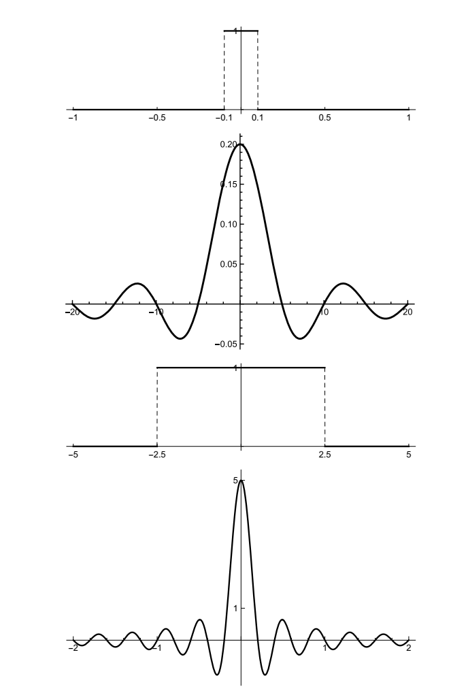
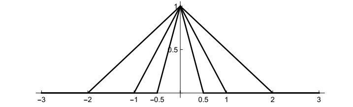
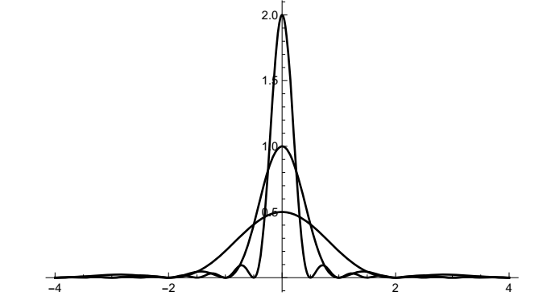
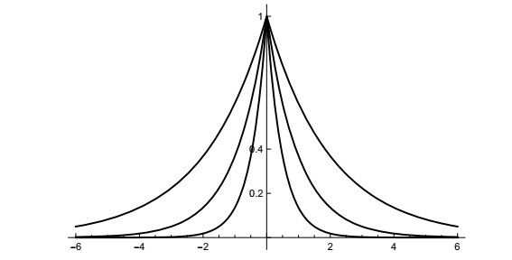
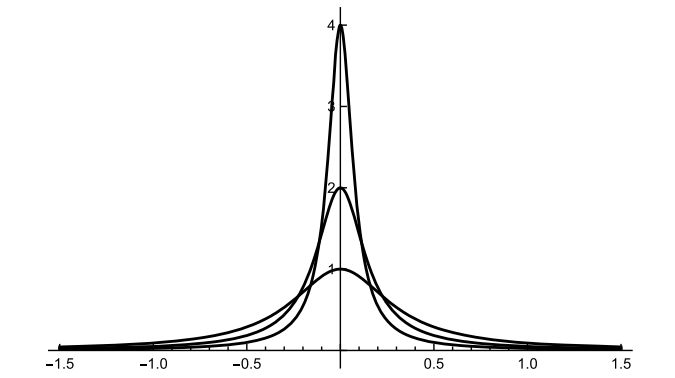
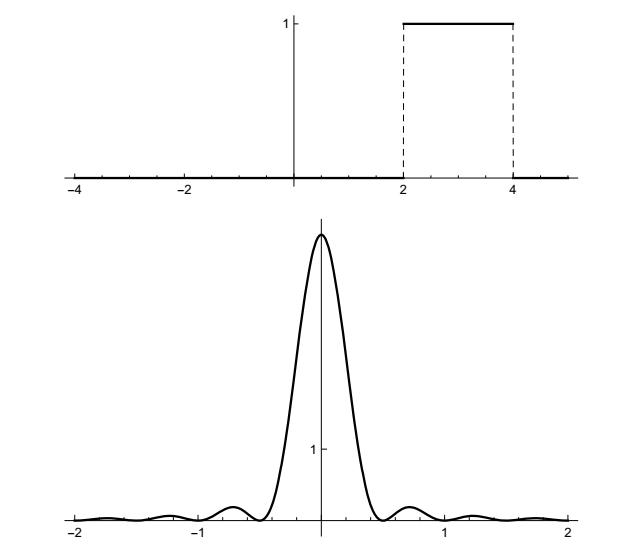
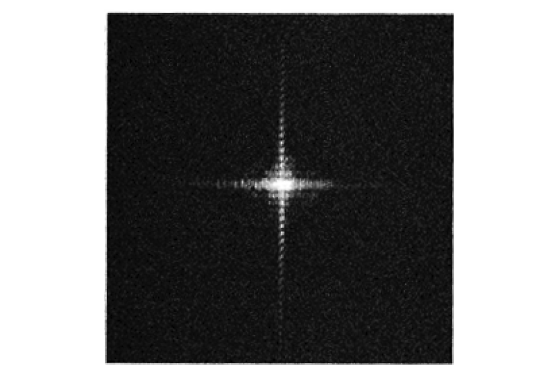

选择:欢迎上船
第一个选择自然是从哪里开始，而我的选择是从简要介绍傅里叶级数开始。傅里叶提出的这种分析方法，最初关注的是利用后来被称为傅里叶级数的方法表示周期现象，后来又通过傅里叶变换（积分）将这些见解扩展到非周期现象。事实上，从傅里叶级数到傅里叶变换的一种方法是将非周期现象视为周期趋于无穷大的周期现象的极限情况。这就是我们在下一章中要做的事情。
周期信号的傅里叶级数与一组离散的频率相关。对于非周期信号的傅里叶变换，这些频率就变成了一组连续的频率。无论哪种情况，这组频率都构成了频谱，而频谱则蕴含了本课题最重要的原理。在此重申一下前言：
每个信号都有一个频谱，频谱决定了信号。
很吸引人，但我应该说，人们需要知道的是频率以及每个频率对信号的贡献有多大。
基于傅里叶级数和傅里叶变换的思想完全植根于物理应用。通常，要研究的现象是由物理学的基本微分方程（热方程、波动方程、拉普拉斯方程）建模的，解通常受到边界条件的约束。
最初的想法是利用傅里叶级数来寻找显式解。这项工作提出了一些深远而艰巨的问题，并引出了不同的方向。例如，傅里叶级数（正弦和余弦）的建立后来被重新定义为正交性、线性算子和特征函数的更一般框架。这引出了利用微分方程解的特征函数展开的普遍思路，这在许多领域和应用中都是一个普遍存在的研究方向。在偏微分方程的现代表述中，傅里叶变换已成为定义研究对象的基础，同时仍然是求解特定方程的工具。这一发展在很大程度上取决于傅里叶变换和卷积之间的显著关系，这在傅里叶级数的早期使用中也有所体现。为了使这些方法的应用越来越具有普遍性，数学家们（在某种程度上是受到工程师和物理学家的推动）开始重新思考“函数”概念的普遍性，以及哪些类型的函数可以——并且应该——被纳入微积分的“手术室”。微分和积分都被推广用于傅里叶分析。
其他方向则将傅里叶分析的工具与被分析对象的对称性相结合。这可能会让你联想到晶体和晶体学，没错，而数学家则会联想到数论和群的傅里叶分析。最后，我必须提到，在纯数学领域，无论你信不信，傅里叶级数的收敛性问题促使G. 康托尔在20世纪初研究并创立了无限集理论，并区分了无限集的不同基数。
周期现象
从傅里叶级数开始本课程就是从周期函数开始，这些函数表现出有规律的重复模式。没有必要把周期性作为一种重要的物理（和数学）现象来强调——你很可能在几乎每门课上都看到了周期性行为的例子和应用。我只想提醒你，周期性通常表现为两种形式，有时相关，有时不相关。一般来说，我们认为周期现象是根据它们在时间上是周期性的还是在空间上周期性的来考虑的。
时间和空间
在时间周期性的情况下，这种现象就会出现。例如，你站在海面上的某个固定点（或交流电路的某个固定点），波浪（或电流）以规律的、重复出现的波峰和波谷模式冲击着你。波浪的高度是时间的周期函数。另一个例子是声音。声音以纵压波的形式到达你的耳朵，这是一种周期性的空气压缩和稀疏。
就空间周期性而言，你会遇到这样的现象：比如，你拍了一张照片，然后观察到重复的图案。
时间和空间周期性在波动中最自然地结合在一起。以一维空间为例，考虑沿弦传播的单个正弦波。对于该波，时间周期由频率v测量，维度为1/时间，单位为Hz（赫兹=周期/秒），空间周期由波长\(\lambda\)测量，维度为长度，单位为特定设置方便的数值。如果我们在空间中固定一个点，让时间变化（拍摄该点的波动视频），那么连续的波峰以每秒ν次的速度经过该点，连续的波谷也是如此。如果我们固定时间并检查波在空间中的传播方式（拍摄快照而不是视频），我们会看到连续波峰之间的距离是一个常数λ，连续波谷之间的距离也是如此。
频率和波长通过方程v=λν相关，其中v是传播速度。这个基本方程只不过是另一个基本方程的波动版本：速度=距离/时间。如果速度是固定的，就像真空中电磁波的速度一样，那么频率决定了波长，反之亦然；如果你能测量一个，你就能找到另一个。对于声音，我们将频率的物理属性与音调的感知属性联系起来。对于可见光，频率被感知为颜色。频率越高，波长越短；频率越低，波长越长。通过这个简单的观察，我们已经触及了一个对我们而言将持续且统一的主题：定义量之间的相互关系。
更多关于空间周期性的内容。空间周期性出现的另一种方式是，当某个空间区域存在重复模式或某种对称性时，与该区域相关的物理可观测量也具有反映这种重复模式的重复模式。例如，晶体在空间中具有规则的、重复的原子图案；原子的排列称为晶格。描述晶体电子密度分布的函数是描述晶体的三维空间变量的周期函数。我提到这个例子，我们稍后会再讨论，因为与你可能想到的通常的一维例子不同，这里的函数有三个独立的周期，分别对应于描述晶格的三个方向。
这是另一个例子，这次是二维的，这很适合傅里叶分析。请考虑以下这些明暗条纹：

毫无疑问，在相应的图像中存在某种空间周期性行为。即使没有精确的定义，也可以合理地说，有些图案的频率较低，而另一些图案的频率较高，这意味着有些图案单位长度上的条纹比其他图案少。对于二维及更高维度的周期性，还有一个更微妙之处：“空间频率”，无论我们最终如何定义它，都必须是一个矢量，而不是一个数字。我们必须说，条纹在特定的方向上以特定的间距出现。
这种周期性条纹及其生成函数是一般二维图像的构建块。当没有颜色时，图像是一个由不同灰度组成的二维阵列，这可以通过这种交替条纹的合成——傅里叶合成来实现。以这种方式构建图像存在有趣的感知问题，颜色更为复杂。
定义、示例
为确定我们都知道我们在说什么，一个函数\(f(t)\)，\(-\infty\lt t\lt \infty\)，是周期为T的周期函数，如果有一个数\(t\gt 0\)，使得 \[f(t+T)= f(t)\] 对所有t。如果存在这样一个T，那么使得等式成立的最小的T，称为函数\(f(t)\)的基本周期。基本周期的每个整数倍也是一个周期： \[f(t+nT) = f(t), \quad\quad n=0,\pm 1,\pm 2,\dots\]
我在这里称变量t是因为我必须称之为某种东西，但这个定义是通用的，并不意味着意味着时间的周期性。
f（t）在任何长度为t的区间上的图是一个周期(cycle)，也称为一个周期(period)。从几何上讲，周期性条件意味着一个周期（任何周期）的形状决定了图的所有位置：形状一遍又一遍地重复。一个问题要求你将这个想法转化为一个公式（对函数进行周期化）。如果你知道一个时期的函数，你就知道一切。
这对每个人来说都是旧闻，但是，举个例子，我还想说几点。考虑函数
\[f(t) = cos\ 2\pi t + \frac{1}{2}\ cos\ 4\pi t,\]
其图如下所示。

独立项的周期分别为1和1/2，但两项和的周期为1： \begin{align} f(t+1) &= cos\ 2\pi(t+1) + \frac{1}{2}cos\ 4\pi(t+1)\\ &= cos(2\pi t + 2\pi) + \frac{1}{2}cos(4\pi t + 4\pi) = cos\ 2\pi t + \frac{1}{2}cos\ 4\pi t = f(t). \end{align}
对于全部t，没有更小的T值，使得 \(f(t+T)=f(t)\)。整体模式每秒重复，但如果该方程表示某类波，可以说它的频率为1Hz吗？我不这么认为。它有周期1，但你最可能说它有，或包含，两个频率，一个余弦频率1Hz和一个频率2Hz。
将周期函数相加的问题值得一提：
- 两个周期函数的和是周期性的吗？
答案为否，这是因为无理数。例如，\(cos\ t\)和 \(cos(\sqrt{2}t)\)各为周期性的，周期分别为\(2\pi\)和\(2\pi\sqrt{2}\)。但和\(cos\ t + cos(\sqrt{2}t)\)不是周期性的。
下面是\(f_1(t) = cos\ t + cos\ 1.4 t\)（左，周期性）和 \(f_2(t) = cos\ t + cos(\sqrt{2}t)\)（右，非周期性）的图示。它们不相等。仔细看看。

\(f_1(t)\)的周期是多少？其中一个问题会让你找到它。
我意识到，当计算机需要用有理数近似值来绘制图形时，用有理数来绘制计算机图形是一种讽刺。我是用Mathematica绘制这些函数，但我不知道它使用什么作为\(\sqrt{2}\)的近似值。这个例子有多人为？一点也不人为。我们下文会解释原因。
构建块：更多示例
时间周期性的经典例子是谐振子，无论是弹簧上的质量块（无摩擦），还是LC电路中的电流（无电阻）。谐振子在几乎每一节物理课上都有详尽的介绍。之所以如此，是因为它是唯一一个可以详尽处理的问题。嗯，也不完全正确——正如有人向我指出的那样，二体问题也已经被彻底研究过了。
系统的状态由一个正弦曲线描述，例如 \[A\ sin(2\pi v t + \phi).\]
该表达式中的参数是振幅A，频率v，和相位\(\phi\)。该函数的周期为1/v，因为 \begin{align} A\ sin(2\pi v(t + \frac{1}{v}) + \phi) &= A\ sin(2\pi v t + 2\pi v\frac{1}{v} + \phi)\\ &= A\ sin(2\pi vt + 2\pi + \phi) = A\ sin(2\pi vt + \phi) \end{align}
空间周期性的经典例子，即整个主题的开始，是圆环中的热量分布。一个环以某种方式被加热，然后热量以某种方式在材料中分布。从长远来看，我们希望环上的所有点都具有相同的温度，但短期内不会如此。在每个固定时间，环周围的温度是如何变化的？
在这个问题中，周期性来自环的坐标描述。把该环想象成一个圆。环上的一个点由角度θ决定，而与位置相关的量都是θ的函数。由于 \(theta\)和\(\theta + 2\pi\)是圆上同一个点，描述圆上物理量（如，温度）的任何连续函数，都是\(\theta\)的周期函数，周期为\(2\pi\)。
该温度分布不是由简单正弦给定。它是傅里叶的热门想法，考虑一个正弦和作为温度分布的模型： \[\sum_{n=1}^N A_n sin(n\theta + \phi_n).\]
对时间的依赖性在系数\(A_n\)中。我们稍后将更全面地研究这个问题。
无论物理背景如何，三角和中的各个项（例如上面的项）都称为谐波，该术语来自音乐音高的数学表示。这些项以不同的振幅和相位对总和做出贡献，这些值可以是任何值。另一方面，这些项的频率是基频的整数倍。对于上面的总和，它是\(1/2\pi\)。因为频率是基频的整数倍，所以总和也是周期为2π的周期。项\(A_n sin(n\theta + \phi_n)\)周期为\(2\pi/n\)，但总和不能有一个比出现的最长周期更短的周期，即\(2\pi\)。
音高和调音。音高和音符的产生是一种与我们一直在考虑的一般类型相同的周期性现象。音符可以通过振动琴弦或其他有规律振动的物体（如嘴唇、簧片或木琴的琴弦）产生。工程问题是如何调音乐器。调音的主题有着引人入胜的历史，从希腊人基于整数比率的自然调音，到如今使用的等温音阶理论。该系统基于\(2^{1/12}\)，一个无理数。
等温音阶有 12 个音符，从任何给定的音符到高八度的同一个音符，两个相邻的音符的频率比为\(2^{1/12}\)。音阶中的音符频率为\(cos(2\pi\cdot 440\cdot 2^{n/12}t)\)，n = 0 到 n = 12。若一个频率为440 Hz的A音（音乐会A音），其音高为 \[A = cos(2\pi \cdot 440\ t),\]
那么在等温音阶中，从A高6个音符的\(D\sharp\)表示为：
\[D\sharp = cos(2\pi \cdot 440\sqrt{2}t).\]
同时播放A和\(D\sharp\)基本上给出了我们之前的信号，\(cos\ t + cos\ 2^{1/2}t\)。我不会评判它听起来好不好听——它是三全音，增四度，“音乐中的魔鬼”。
当然，当你给钢琴调音时，你不会非理性地收紧琴弦。艺术在于做出正确的近似。对此有很多讨论；例如，请参见 http://www.precisionstrobe.com/
要了解有关一般调音的更多信息，请尝试 http://www.wikipedia.org/wiki/Musicaltuning
下面是第一份参考文献中的一段话，描述了对音调良好的需求：
音乐技术的两项发展必然导致纯律的改变。随着带弦乐器的发展，在设置纯律音品时出现了一个问题：在琴颈上的两根弦上演奏八度音阶会产生不纯的八度音阶。同样，设置为纯律音阶的管风琴也会发出一些不悦耳的和弦。为了解决这个问题，一种妥协的方案是平均律音阶的出现。在这个系统中，一些音程进行了调整，以增加可用的调数。随着18世纪作曲技巧的演变，和声转调的应用日益增多，人们提倡使用平均律音阶。J. S. 巴赫就是其中一位倡导者，他出版了两部名为《平均律钢琴曲集》的完整作品。这两部作品分别包含24首赋格曲，分别用12个大调和12个小调创作，并证明了使用平均律音阶可以将音乐谱写成任何调，并转换到任何调上。
一切都加起来
从简单、单一正弦，我们通过求余弦和，可以构建更复杂的周期函数，但目前为止，仅考虑了有限和。为了突出基本思想，可以稍微标准化一下，并考虑周期1的函数。这简化了一些写作，如果周期不是1，则很容易修改公式。周期为 1 的基本函数是\(sin\ 2\pi t\)，因此我们上面简要考虑的傅里叶型和（Fourier-type sum）现在看起来像
\[\sum_{n=1}^N A_n\ sin(2\pi nt + \phi_n).\]
无论显示每个谐波的幅度和相位有什么心理优势，它都是一种计算起来有些尴尬的表达方式。更常见的是将一般三角和写成
\[\sum_{n=1}^N(a_n\ cos\ 2\pi nt + b_n\ sin\ 2\pi nt).\]
利用正弦函数的加法公式，你可以在两个表达式之间传递——它们是等价的。（就当做练习吧。）
如果我们包含一个常数项（n=0），可以写为 \[\frac{a_0}{2} + \sum_{n=1}^N(a_n\ cos\ 2\pi nt + b_n\ sin\ 2\pi n t).\]
将常数项写成分数 1/2 的原因是，正如您将在下面看到的，它与此类和的另一个表达式更匹配。在电气工程中，常数通常被称为直流分量，如 “直流电 ”中的直流分量。其他术语是周期性的，交替出现，如 “交流电 ”或交流电。除直流分量外，谐波的周期分别为 1、1/2、1/3、……、1/N。由于各个谐波的频率都是最低频率的整数倍，因此总和的周期为 1。
使用复指数。如果我们使用复指数来表示正弦和余弦，那么关于这种三角和的代数工作会变得无比容易。如果你对复数感到生疏，请参阅附录B，其中讨论了复指数，以及如何毫无畏惧地使用它们来表示真实信号，并回答了负频率的含义。后者即将出现。
我提醒你
\[cos\ t = \frac{e^{it} + e^{-it}}{2}, \quad\quad sin\ t = \frac{e^{it} - e^{-it}}{2i}.\]
因此
\[cos\ 2\pi nt = \frac{e^{2\pi int}+ e^{-2\pi int}}{2}, \quad\quad sin\ 2\pi nt = \frac{e^{2\pi int}- e^{-2\pi int}}{2i}.\]
(顺便一提，这里和本书所有地方，\(i = \sqrt{-1}\)。不是j。见附录B中的原则声明。)使用这些重新写和
\[\frac{a_0}{2} + \sum_{n=1}{N}(a_n\ cos\ 2\pi nt + b_n\ sin\ 2\pi nt).\]
得到 \begin{align} \frac{a_0}{2} + \sum_{n=1}{N}(a_n\ cos\ 2\pi nt + b_n\ sin\ 2\pi nt) &= \frac{a_0}{2} + \sum_{n=1}^N(a_n\frac{e^{2\pi int} + e^{-2\pi int}}{2} - ib_n\frac{e^{2\pi int} - e^{-2\pi int}}{2}) \quad\quad&(\text{在正弦项中使用 1/i = -i})\\ &= \frac{a_0}{2} + \sum_{n=1}^N(\frac{1}{2}(a_n - ib_n)e^{2\pi int} + \frac{1}{2}(a_n + ib_n)e^{-2\pi int})\\ &= \frac{a_0}{2} + \sum_{n=1}^N\frac{1}{2}(a_n - ib_n)e^{2\pi int} + \sum_{n=1}^N\frac{1}{2}(a_n + ib_n)e^{-2\pi int}. \end{align}
我们希望将其写成一个对正 n 和负 n 求和的和。为此，设
\[c_n = \frac{1}{2}(a_n - ib_n) \quad and\quad c_{-n} = \frac{1}{2}(a_n + ib_n),\quad n=1,\dots,N,\]
以及
\[c_0 = \frac{a_0}{2}.\]
保留第一个和，并将第二个和写为n从-1到-N，那么表达式变为
\[\frac{a_0}{2} + \sum_{n=1}^{N}c_n e^{2\pi int} + \sum_{n=-1}^{-N}c_n e^{2\pi int}.\]
因此结合起来产生 \[\frac{a_0}{2} + \sum_{n=1}^N(a_n\ cos\ 2\pi nt + b_n\ sin\ 2\pi nt) = \sum_{n=-N}{N}c_n e^{2\pi int}.\]
负频率是n的负值。现在你可以明白为什么我们把DC项写成\(a_0/2\)。
该和的最终形式中，系数\(c_n\)是复数。如果我们假设信号是实数——在先前的积分中不需要——那么它们关于 a 和 b 的定义就蕴含着以下关系 \[c_{-n} =\overline{c_n}.\]
特别是，对于n的任何值，\(c_n\)和\(c_{-n}\)的大小都是相等的 \[|c_n| = |c_{-n}|.\]
请注意，当n=0时，我们得到 \[c_0 = \overline{c_0},\]
这意味着\(c_0\)是实数；这与\(c_0\)等于实数 \(a_0\)/2 相一致。
实值信号的共轭对称性\(c_{-n} = \overline{c_n}\)很重要。如果我们从以下表达式开始 \[f(t) = \sum_{n=-N}^N c_ne^{2\pi int}\]
其中，\(c_n\)是复数，那么\(f(t)\)是实值信号，当且仅当系数满足\(c_{-n} = \overline{c_n}\)。如果\(f(t)\)是实数，那么
\[\sum_{n=-N}^N\ c_n e^{2\pi int} = \overline{\sum_{n=-N}^N\ c_n e^{2\pi int}} = \sum_{n=-N}^N\ \overline{c_n}{\overline{e^{2\pi int}}} = \sum_{n=-N}^N\ \overline{c_n}e^{-2\pi int},\]
将相似项等价，得到关系式\(c_{-n} = \overline{c_n}\)。相反，假设关系得到满足。对于n = 0，有 \(c_0 = \overline{c_0}\)，所以 \(c_0\)是实数。对于每个\(n\ne 0\)，我们可以将\(c_ne^{2\pi int}\)和\(c_{-n}e^{-2\pi int}\)分组，那么
\[c_n e^{2\pi int} + c_{-n}e^{-2\pi int} = c_n e^{2\pi int} + \overline{c_n}\overline{e^{2\pi int}} = 2\text{Re}(c_ne^{2\pi int}).\]
那么 \[\sum_{n=-N}^N\ c_n e^{2\pi int} = c_0 + \sum_{n=1}^N 2\ Re(c_n e^{2\pi int}) = c_0 + 2\ Re\Big\{\sum_{n=1}^N c_n e^{2\pi int}\Big\},\]
所以，复指数的和产生一个实值信号。
在 c 处迷失
假设你面对的是一个看起来很复杂的周期性信号。你可以把这个信号看成是随时间变化的，但同样，接下来的推理也适用于任何一种一维周期现象。无论如何，我们可以假设周期为 1。我们是否可以将该信号表示为周期为 1 的较简单周期信号之和？
称信号为\(f(t)\)。假设我们可以将\(f(t)\)写为一个和
\[f(t) = \sum_{n=-N}^N\ c_n e^{2\pi int}.\]
表达是中未知的是系数\(c_n\)。我们可以求解它们吗？
从什么角度解决？我们假设\(f(t)\)已知，所以想要关于\(f(t)\)系数表达式。让我们直接用代数来计算，尝试分离出固定k对应的系数 \(c_k\)。首先，从和式中取出第 k 项，得到 \[c_k e^{2\pi ikt} = f(t) - \sum_{n=-N, n\ne k}^N\ c_n e^{2\pi int}.\]
两边均乘以\(e^{-2\pi ikt}\)得到\(c_k\): \begin{align} c_k &= e^{-2\pi ikt}f(t) - e^{-2\pi ikt}\sum_{n=-N,n\ne k}\ c_ne^{2\pi int}\\ &= e^{-2\pi ikt}f(t) - \sum_{n=-N,n\ne k}\ c_n e^{-2\pi ikt}e^{2\pi int}\\ &= e^{-2\pi ikt}f(t) - \sum_{n=-N,n\ne k}\ c_n e^{2\pi i(n-k)t}. \end{align}
好吧，太棒了，我们已经设法根据所有其他未知系数来求解\(c_k\)。
代数就到此为止了，代数用完了，绝望的数学家就会转向微积分，即微分或积分。这里有一个提示：微分不会让你得到任何东西。
需要另一个主意，即两边从0到1积分；如果知道长度1的区间发生了什么，就知道了一切——这就是周期的作用。我们取间隔从0到1作为函数的基周期，但任意长度为1的间隔都可以，我们将会在下面解释（再次，周期如何工作）。得到
\begin{align} c_k &= \int_0^1\ c_k\ dt = \int_0^1\ e^{-2\pi ikt}f(t)\ dt - \int_0^1\Big(\sum_{n=-N,n\ne k}^N\ c_n e^{2\pi i(n-k)t}\Big)\ dt\\ &= \int_0^1\ e^{-2\pi ikt}f(t)\ dt - \sum_{n=-N,n\ne k}^N \ c_n \int_0^1\ e^{2\pi i (n-k)t}\ dt. \end{align}
就像在微积分中一样，我们可以通过以下公式来计算复指数的积分
\begin{align} \int_0^1\ e^{2\pi i (n-k)t}dt &= \frac{1}{2\pi i(n-k)}e^{2\pi i (n-k)t}\Big]_{t=0}^{t=1} \quad\quad\quad &(反导数，不定积分)\\ &= \frac{1}{2\pi i(n-k)}(e^{2\pi i (n-k)} - e^0)\\ &= \frac{1}{2\pi i(n-k)}(1-1) &(记住e^{2\pi i\cdot \text{整数}} = 1)\\ &= 0. \end{align}
关于\(e^{2\pi i\cdot \text{整数}} = 1\), 注：
等式：是欧拉公式和三角函数周期性的直接结果。
含义：复平面上旋转整数个完整圈后回到实轴起点。
求和中所有项均积分为0！我们已经找到关于第k个系数的公式： \[c_k = \int_0^1\ e^{-2\pi ikt}f(t)\ dt.\]
两个示例和一个警告
数学I：收敛结果
傅里叶级数的应用
数学II:正交性与平方可积函数
附录：傅里叶级数收敛性注记
附录：柯西-施瓦茨不等式
非常著名和有用的不等式。必须介绍。柯西-施瓦茨不等式是两个向量的内积及其范数之间的关系。表述如下：
\[|(\underline{v},\underline{w}|) \le ||\underline{v}||\ ||\underline{w}||.\]
这是一个真正的苦力，你应该知道。你甚至会在书中分散的一些问题中看到它的作用。
对于几何向量来说，这一点很容易从内积的几何公式看出，
\[|(\underline{v},\underline{w})| = ||\underline{v}||\ ||\underline{w}||\ |\text{cos}\theta| \le ||\underline{v}||\ ||\underline{w}||, \]
因为\(|\text{cos}\theta| \le 1\)。实际上，内积的几何公式的原理来自柯西-施瓦茨不等式。
如何从几何向量内积的代数定义中推导出该不等式当然并不明显。用分量表示，不等式（对于实向量）表示
\[\big|\sum_{k=1}^n v_k w_k\big| \le \big(\sum_{k=1}^n v_k^2\big)^{1/2}\big(\sum_{k=1}^n w_k^2\big)^{1/2}. \]
坐下来，找个时间试试那个。
柯西-施瓦茨不等式的推导一般只使用前面列出的内积的四个代数性质。因此，同样的论证也适用于满足这些性质的任何积，例如 L2([0, 1]) 上的内积。这是一个非常优雅的论证（我相信是约翰·冯·诺依曼提出的），我想向你们展示一下。我们将在这里针对实数内积给出这个论证，并在后面对复杂情况进行评论。
任何不等式最终都可以写成某种形式，表明某个量为正，或者至少是非负的。我们已知的正数的例子包括实数的平方、某个物体的面积以及某个物体的长度。更微妙的不等式有时依赖于凸性，例如，一个质量系统的重心包含在质量的凸包内。这个关于不等式本质的小小即兴演绎，堪称宇宙的一个小秘密。
傅里叶变换
傅里叶变换初探
我们即将从傅里叶级数过渡到傅里叶变换。“过渡”这个词很贴切，因为我们选择了一条傅里叶变换从周期函数过渡到非周期函数的路径。为了完成这一过程，我们将非周期函数（几乎可以是任何函数）视为周期函数随着周期越来越长的极限情况。实际上，这个过程并不会立即产生预期的结果。需要一些额外的调整才能将傅里叶变换从傅里叶系数中导出，但我们会轻松着陆，这将是一次有趣的探索。
一个例子：矩形函数及其傅里叶变换
让我们举一个具体、简单、重要的例子。考虑矩形函数，或简称“rect”，定义如下
\[\Pi(t) = \begin{cases} &1, \quad &|t| \lt 1/2,\\ &0, \quad &|t| \gt 1/2. \end{cases} \]
图示如下，不太复杂。

\(\Pi(t)\)为偶函数——以原点为中心——宽度为 1。稍后我们将讨论其平移和缩放版本。你可以将\(\Pi(t)\)想象成一个开关，它打开一秒，其余时间关闭。\(\Pi\)也被称为顶帽函数（因其图像而得名）、指示函数或区间 (-1/2, 1/2) 的特征函数。
虽然我们已经定义了\(\Pi(\pm 1/2) = 0\)，但其他常见的约定是\(\Pi(\pm 1/2) = 1\)或 \(\Pi(\pm 1/2) = 1/2\)。有些人根本不在±1/2定义\(\Pi\)，从而在定义域中留下了两个空洞。我不想卷入这场争论。这几乎无关紧要，尽管在某些情况下，\(\Pi(\pm 1/2) = 1/2\)的选择最合理。到时候，我们会在特殊情况下处理这个问题。
\(\Pi(t)\)不是周期性的。它没有傅里叶级数。在问题中，你尝试了一些周期化，我再次想用\(\Pi\)来做。作为\(\Pi(t)\)的周期性版本，我们以规则的间隔重复函数的非零部分，用函数为零的（长）间隔隔开。我们可以想象这样一个函数：我们一次打开一个开关一秒钟，反复这样做，并在两次打开之间长时间保持关闭状态。（我们经常听到与这类现象相关的术语“占空比”。）这是周期为 16 的\(\Pi(t)\)的图。

以下是周期为 4、16 和 32 的周期矩形函数的傅里叶系数图；分别为第 0 个系数，以及每个函数的第 10 个系数、第 60 个系数和第 200 个系数。频谱对称，并显示了正负频率。由于周期函数为实数且为偶数，因此每种情况下的傅里叶系数均为实数。这些图显示的是实际系数，而非其幅值。
其实不完全是。我稍后会解释横轴上的缩放比例，也就是为什么傅里叶系数\(c_n\)不直接绘制在整数 n 处。还有一个重要的问题是垂直缩放。但请记住整体形状——这才是重点。


如图所示，随着周期的增加，频率越来越接近，系数看起来确实在遵循某条确定的曲线。我们可以分析一下这个特定例子中发生的事情，并结合一些一般性陈述来引导我们继续前进。
回想一下，对于周期为t的函数\(f(t)\)，傅里叶级数具有以下形式
\[f(t) = \sum_{n=-\infty}^{\infty}\ c_n e^{2\pi i n t/T}\]
频率为 0, \(\pm 1/T\), \(\pm 2/T, dots\)。频谱中的点之间的间隔为 1/T，实际上，在上面的图片中，随着周期 T 的增加，频谱变得越来越密集。第n个傅里叶系数由下式给出
\begin{align} c_n &= \frac{1}{T}\ \int_0^T\ e^{-2\pi i nt/T}f(t)\ dt\\ &= \frac{1}{T}\int_{-T/2}^{T/2}\ e^{-2\pi int/T}f(t)\ dt. \end{align}
我们可以计算\(\Pi(t)\)的傅里叶系数： \begin{align} c_n &= \frac{1}{T} \int_{-T/2}^{T/2}e^{-2\pi int/T}\Pi(t)\ dt = \frac{1}{T} \int_{-1/2}^{1/2}e^{-2\pi int/T}\ \cdot 1\ dt\\ &= \frac{1}{T}\big[\frac{1}{-2\pi in/T}e^{-2\pi int/T}\big]_{t=-1/2}^{t=1/2} = \frac{1}{2\pi in}\big(e^{\pi in/T} - e^{-\pi in/T}\big) =\frac{1}{\pi n}\ sin\ (\frac{\pi n}{T}). \end{align}
现在，虽然频的索引为 n，但频谱中的点为 n/T（n = 0, ±1, ±2, …），因此，将频谱信息（\(c_n\)的值）视为在点 n/T 处求值的\(\Pi\)变换会更有帮助。暂将其写为
\[(\text{transform of periodized }\Pi)(\frac{n}{T}) = \frac{1}{\pi n}sin(\frac{\pi n}{T}).\]
我们就快成功了，但还不够。如果你很想直接取 \(T\rightarrow\infty\) 时的极限，那么考虑一下，对于每个 n，如果 T 非常大，那么 n/T 就非常小，并且
\[\frac{1}{\pi n}sin(\frac{\pi n}{T}) \text{ is about size }\frac{1}{T}\quad (\text{remember sin}\theta \approx \theta \text{ if } \theta \text{ is small}).\]
换句话说，对于每个n，这种所谓的变换，
\[\frac{1}{\pi n}sin\ (\frac{\pi n}{T}), \]
像\(1/T\)一样趋于0。所有傅里叶系数都趋于0，随着\(T\rightarrow \infty\)。为了弥补这一点，我们扩大了T倍，转而考虑
\[(\text{scaled transform of periodized }\Pi)(\frac{n}{T}) = T\frac{1}{\pi n}sin(\frac{\pi n}{T}) = \frac{sin(\pi n/T)}{\pi n/T}.\]
事实上，缩放变换的图就是我上面展示的。
接下来，如果 T 很大，那么我们可以考虑用连续变量（比如 s）替换紧密堆积的离散点 n/T，这样当 s = n/T 时，我们就可以近似地写出，
\[(\text{scaled transform of periodized }\Pi)(s) = \frac{sin\ \pi s}{\pi s}.\]
从积分公式来看，这个过程是什么样的？简单地说
\begin{align} (\text{scaled transform of periodizd }\Pi)(\frac{n}{T}) &= T\ \cdot c_n \\ &= T\ \cdot \frac{1}{T}\int_{-T/2}^{T/2} e^{-2\pi int/T}f(t)\ dt\\ &= \int_{-T/2}^{T/2}e^{-2\pi int/T}f(t)\ dt. \end{align}
我们现在认为\(T\rightarrow\infty\) 具有用连续变量 s 替换离散变量 n/T 的效果，同时将积分极限推至 \(\pm\infty\)。
然后，我们可以将\(\Pi\)的（极限）变换写为积分表达式
\[\hat{\Pi}(s) = \int_{-\infty}^{\infty}e^{-2\pi ist}\Pi(t)\ dt.\]
瞧，傅里叶变换诞生了！或者说，它很快就会诞生。我们使用符号\(\hat{\Pi}\) 来致敬傅里叶系数的符号，但稍后我们会详细介绍符号。
让我们计算积分（我们知道答案是什么，因为我们之前看到了它的离散形式）：
\[\hat{\Pi}(s) = \int_{-\infty}^{\infty}e^{-2\pi ist}\Pi(t)\ dt = \int_{-1/2}^{1/2}e^{-2\pi ist}\ \cdot\ 1 \ dt = \frac{sin\ \pi s}{\pi s}.\]
如下图所示。现在你肯定能看到由离散的、缩放的傅里叶系数图所追踪的连续曲线。
函数\(sin\ \pi x/\pi x\)（现在用通用变量 x 表示）在这个主题中出现得如此频繁，以至于它被赋予了一个名称，sinc：
\[sinc\ x = \frac{sin\ \pi x}{\pi x}, \]
发音为“sink“。请注意
\[sinc\ 0 = 1\]
由于著名的极限
\[\text{lim}_{x\rightarrow 0}\frac{sin\ x}{x} = 1.\]
毫无疑问，你在学习微积分的时候见过这个极限，而且你可能以为以后再也不会见到它了。但 sinc 函数在电子工程和其他领域都非常重要，因为它是矩形函数的傅里叶变换。事实上，可以说很多电子工程专业的学生在梦里都见过 sinc 函数。

Fry’s Electronics 是硅谷及其他地区一家著名的电子产品商店。他们当然了解自己的顾客。我个人也为他们的生意贡献了自己的一份力量。我使用这些照片得到了 Fry’s Electronics Inc. 和美国数学研究所的许可。
一般情况
如果我们一开始就对任意函数进行周期化，并试图让周期 T 趋于无穷大，那么我们也会想到同样的想法——将傅里叶系数按 T 缩放。假设 f(t) 在 \(|t| \le 1/2\) 之外为零。（任何区间都可以；我们只需要假设函数在某个区间之外为零，这样我们就可以进行周期化。）我们将 f(t) 周期化为周期 T，并计算傅里叶系数：
\[c_n = \frac{1}{T}\int_{-T/2}^{T/2} e^{-2\pi int/T}f(t)\ dt= \frac{1}{T}\int_{-1/2}^{1/2}e^{-2\pi int/T}f(t)\ dt.\]
这有多大？我们可以估计
\begin{align} |c_n| &= \frac{1}{T}\Big|\int_{-1/2}^{1/2} e^{-2\pi int/T}f(t)\ dt\Big|\\ &\le \frac{1}{T}\int_{-1/2}^{1/2}|e^{-2\pi int/T}|\ |f(t)|\ dt = \frac{1}{T}\int_{-1/2}^{1/2}|f(t)|\ dt = \frac{A}{T}, \end{align}
其中，
\[A = \int_{-1/2}^{1/2}|f(t)|\ dt.\]
A 是一个与 n 和 T 无关的固定数。我们再次看到 \(c_n\) 像 1/T 一样趋向于 0，因此我们再次按 T 进行缩放并考虑
\[(\text{scaled transform of periodized f})(\frac{n}{T}) = T c_n = \int_{-T/2}^{T/2} e^{-2\pi int/T}f(t)\ dt.\]
在极限 \(T\rightarrow \infty\) 时，我们用 s 代替 n/T 并考虑
\[\hat{f}(s) = \int_{-\infty}^{\infty}e^{-2\pi ist}f(t)\ dt.\]
我们得到了同样的积分公式。
傅里叶变换定义
现在，我们将函数f（t）的傅里叶变换定义为
\[\hat{f}(s) = \int_{-\infty}^{\infty}e^{-2\pi ist}f(t)\ dt.\]
现在，先将其视为一个正式定义；稍后我们将讨论此类积分存在的条件。我们假设 f(t) 对所有实数 t 都有定义。我们不假设 f(t) 在某个区间之外为零，也不进行周期化。这个定义是通用的。请注意：我们并没有推导傅里叶变换——我们只是激发了这个定义。
对于任意\(s\in R\)，将f（t）与复值函数\(e^{-2\pi ist}\) 相对于t进行积分，通常会得到s的复值函数。记住，傅里叶变换\(\hat{f}(s)\)是\(s\in R\)的复值函数。由于对称性的原因，有些情况下，\(\hat{f}(s)\)是实数（如\(\hat{\Pi}(s) = sinc\ s\)），我们将讨论这个问题。
周期函数的频谱是一个离散的频率集，可能是一个无限集（例如，当存在某个阶次的不连续性时），但始终是一个离散集。相比之下，非周期信号的傅立叶变换产生的是连续的频谱或频率的连续体。可能在 |s| 足够大的情况下，变换 \(\hat{f}(s)\)恒等于零–这一类重要的信号被称为带限信号–也可能 \(\hat{f}(s)\)的非零值扩展到\(\pm \infty\)，也可能\(\hat{f}(s)\)仅在 s 的几个值上为零。
虽然傅立叶变换是为了寻找以周期函数为模型的非周期性函数的频谱信息而产生的，但其额外的复杂性和结果的丰富性很快就会让人觉得我们身处一个大不相同的世界。刚才给出的定义是一个很好的定义，因为它内容丰富，而且尽管复杂。周期函数固然很好，但世界上还有很多东西值得我们去分析。
仍然与傅里叶级数类似，傅里叶变换将信号 f(t) 分解为其频率分量 \(\hat{f}(s)\)。我们尚未考虑相应的合成过程。如何从频域中的 \(\hat{f}(s)\)恢复时域中的 f(t)？
从 \(\hat{f}(s)\)恢复f(t)。我们可以进一步拓展非周期函数作为周期函数极限的思想，并探索如何通过其变换 \(\hat{f}(s)\)得到 f(t)。再次假设 f(t) 在某个区间外为零，并将其周期化为（较大的）周期 T。我们将 f(t) 展开为傅里叶级数，
\[f(t) = \sum_{n=-\infty}^{\infty}\ c_ne^{2\pi int/T}.\]
傅里叶系数可以通过在点 \(s_n = n/T\) 处求 f 的傅里叶变换来写出：
\begin{align} c_n &= \frac{1}{T}\int_{-T/2}^{T/2}e^{-2\pi int/T}f(t)\ dt = \frac{1}{T}\int_{-\infty}^{\infty}e^{-2\pi int/T}f(t)\ dt\\ &\quad\quad (\text{we can extend the limits to }\pm\infty \text{ since f(t) is zero outside of [-T/2,T/2]})\\ &= \frac{1}{T}\hat{f}(\frac{n}{T}) = \frac{1}{T}\hat{f}(s_n). \end{align}
将其代入f（t）的表达式中：
\[f(t) = \sum_{n=-\infty}^{\infty}\ \frac{1}{T}\hat{f}(s_n)e^{2\pi is_n t}.\]
点 \(s_n = n/T\)之间的间隔为 1/T，因此我们可以将 1/T 视为\(\Delta s\)，而上面的和可以看作是近似积分的黎曼和
\[\sum_{n=-\infty}^{\infty}\frac{1}{T}\hat{f}(s_n)e^{2\pi is_n t} = \sum_{n=-\infty}^{\infty}\hat{f}(s_n)e^{2\pi is_n t}\Delta s \approx \int_{-\infty}^{\infty}\hat{f}(s)e^{2\pi ist}\ ds.\]
积分的极限从\(-\infty\) 到 \(\infty\)，因为和以及点可以从\(-\infty\) 到 \(\infty\)。当周期\(T\rightarrow \infty\)是，我们期望有
\[f(t) = \int_{-\infty}^{\infty}\hat{f}(s)e^{2\pi ist}\ ds\]
且我们从\(\hat{f}(s)\) 恢复出了 f(t)。我们找到了逆傅里叶变换和傅里叶逆。
傅里叶逆变换，以及傅里叶逆的定义。我们刚刚得到的积分本身可以作为一个变换，因此我们将函数 g(s) 的傅里叶逆变换定义为
\[\breve{g}(t) = \int_{-\infty}^{\infty} e^{2\pi ist}g(s)\ ds \quad(\text{upside down hat – cute; read: “check”}).\]
逆傅里叶变换与傅里叶变换类似，只是后者的复指数带有负号。稍后我们将进一步讨论傅里叶变换与其逆变换之间的对称性。
再次强调，我们暂时只是形式化地处理这个问题，不讨论积分成立的条件。本着同样的精神，我们还提出了傅里叶逆定理，即：
\[f(t) = \int_{-\infty}^{\infty}e^{2\pi ist}\hat{f}(s)\ ds.\]
这适用于（当它适用时）一般函数及其变换。
写得很紧凑，
\[(\hat{f})^{\breve{}} = f\ .\]
顺便说一句，我们本来可以先从 \(\hat{f}\)而不是 f 作为基函数，来完整地推导上面的论证。这样一来，我们就能得到傅里叶逆的补充结果：
\[(\breve{g})^{\hat{}} = g \ .\]
简单总结与展望
让我们总结一下我们所做的工作，一方面是为了巩固想法，另一方面也是为了指导我们下一步的行动。这涉及很多事情，而且都很重要，一切准备就绪还需要一些时间。
-
信号f(t)的傅里叶变换是
\[\hat{f}(s) = \int_{-\infty}^{\infty}f(t)e^{-2\pi ist}\ dt.\]
它是s的复值函数。
-
\(\hat{f}\)的定义域是积分存在的实数集 s。有人说\(\hat{f}\)定义在频域上，而原始信号 f(t) 定义在时域上（或空域，取决于上下文）。我们已经开始使用这个术语了。
对于定义在整个实数轴上的（非周期）信号，我们不像周期信号那样拥有一组离散的频率，而是一组连续的频率。然而，我们仍然将各个 s 称为“频率”，并且所有满足\(\hat{f}\) 的频率 s 的集合就是 f(t) 的谱。
与傅里叶级数一样，人们常常将\(\hat{f}(s)\)的值称为频谱。这种模糊性不应该造成混淆，但它指出了傅里叶级数和傅里叶变换之间的区别，我将在下文简要讨论。同样，与傅里叶级数一样，我们将复指数 \(e^{2\pi ist}\) 称为谐波。
\(\hat{f}(s)\)的一个特定值值得注意；即，对于s=0，我们有
\[\hat{f}(0) = \int_{-\infty}^{\infty}f(t)\ dt.\]
如果 f(t) 是实数（在应用中最常见的情况），那么 \(\hat{f}(0)\)也是实数，即使傅立叶变换的其他值可能是复数。用微积分术语来说， \(\hat{f}(0)\)就是 f(t) 图形下的面积。
-
逆傅里叶变换定义为
\[\breve{g}(t) = \int_{-\infty}^{\infty} e^{2\pi ist}g(s)\ ds.\]
傅里叶逆表明 \[(\hat{f})^{\breve{}} = f,\quad (\breve{g})^{\hat{}}=g\ .\]
总的来说，傅立叶变换及其逆变换提供了一种在信号的两种（等效）表示之间进行转换的方法。
函数 f(t) 和 \(\hat{f}(s)\)可能通过傅立叶逆变换 “等价”，但它们也可能具有截然不同的性质；例如，一个可能是实值，另一个可能是复值。当\(\hat{f}(s)\)存在时，我们真的可以把它代入逆傅里叶变换的公式中–逆傅里叶变换也是一个不定积分，除了减号之外，看起来与正向变换相同–就真的能得到 f(t)吗？真的吗？不明显！值得琢磨。
我们注意到傅里叶逆变换的一个结果，即
\[f(0) = \int_{-\infty}^{\infty}\hat{f}(s)\ ds\ .\]
这个结果没有快速的微积分解释。右手边是复值函数的积分（通常），结果是实数（如果f（0）是实数）。
-
如果 t 具有时间维度，那么为了使指数 \(e^{\pm 2\pi ist}\) 中的 st 无量纲，变量 s 必须具有 1/时间维度，也就是频率维度。一般而言，无论变量在 \(e^{\pm 2\pi ist}\)中的含义如何，它们的量纲都必须互为倒数。
这是两个领域之间倒数关系的第一个例子，未来还会有很多例子。当这种关系出现时，我们会记录下来。期待它们发生。它们将帮助你整理对这个主题的理解。
-
平方幅值\(|\hat{f}(s)|^2\) 被称为功率谱（尤其在通信领域中应用时）或谱功率密度（尤其在光学领域中应用时）或能量谱（尤其在所有其他领域中）。
时间域中的信号能量和频率域中的能量谱之间的重要关系是傅里叶变换的帕塞瓦尔(Parseval)恒等式：
\[\int_{-\infty}^{\infty}|f(t)|^2\ dt = \int_{-\infty}^{\infty}|\hat{f}(s)|^2\ ds\ .\]
这是瑞利恒等式的傅里叶变换版本，也是未来的一个亮点。
关于符号的警告：没有一个是完美的；所有这些都在使用中。 根据要执行的操作或上下文，为傅里叶变换提供不同的符号是很有用的。但这里有一个警告，这是抱怨的开始，也是全面咆哮的前奏。摆弄符号似乎是这门学科中不可避免的麻烦。在正变换和逆变换之间来回切换，在不同域中命名变量（甚至写出或不写出变量），将加号改为减号，取复共轭，这些都是日常的常规操作，如果你不小心，有时即使你很小心，它们也会导致无穷无尽的混乱。当我们有一些例子时，你就会相信我，你会经常听到我抱怨这件事。
以下是一个常见符号惯例的示例：
如果函数名为 f，则通常使用相应的大写字母 F 来表示傅里叶变换。因此，我们可以看到 a 和
A、z 和 Z，以及介于两者之间的所有符号。但请注意，这两个函数的变量通常使用不同的名称，
例如 f(x)（或 f(t)）和 F(s)。这种“大写字母表示法”在工程学中非常常见，但在涉及对偶性
时常常会让人感到困惑，下文将对此进行解释。
然后是：
由于傅里叶变换是一种应用于函数生成新函数的运算，因此有时用一种运算符号来表示也很方便。例如，通常将 fˆ(s) 写为 Ff(s)，因此，重复完整的定义，
\[\mathcal{F}f(s) = \int_{-\infty}^{\infty}e^{-2\pi ist}f(t)\ dt\ .\]
这通常是最明确的符号。
对于那些相信括号力量的人来说，写括号更合适
\[(\mathcal{F}f)(s) = \int_{-\infty}^{\infty}e^{-2\pi ist}f(t)\ dt\ .\]
表明我们采用f的变换，并通过给定的公式在s处评估该变换。但是额外的括号（可能）是一件好事，我们不会使用它们。小心点。
逆傅里叶变换的操作然后由\(\mathcal{F}^{-1}\)表示，所以
\[\mathcal{F}^{-1}g(t) = \int_{-\infty}^{\infty}e^{2\pi ist}g(s)\ ds.\]
傅里叶的逆看起来是
\[\mathcal{F}^{-1}\mathcal{F}f = f, \quad \mathcal{F}\mathcal{F}^{-1}f = f.\]
我们将更频繁地使用符号\(\mathcal{F}\)和\(\mathcal{F}^{-1}\)。这种符号也远非理想，但总体而言，它产生的问题较少。
最后，一个函数及其傅里叶变换被称为构成傅里叶对。为了表示这种兄弟关系，人们设计了各种符号。其中一种是
\[f(t) \rightleftharpoons F(s)\ .\]
Bracewell提倡使用
\[F(s) \supset f(t),\]
其他人也用它。我…不喜欢它。
关于定义的警告。 我们对傅里叶变换的定义很常见，但并非唯一。一个问题是将 2π 放在哪里：像我们所做的那样放在指数函数中；或者将其作为前面的一个因子；或者完全省略。还有一个问题是，哪个是傅里叶变换，哪个是逆变换，也就是说，哪个变换在指数函数中带负号。所有这些约定在日常工作中都有所应用。在本章末尾，我将总结在各种约定下，哪些公式会发生什么变化。我现在才提到这一点，是因为当你和朋友谈论傅里叶变换时，一定要确保你们都知道要遵循哪些约定。友谊就曾因此破裂。
关于光谱的评论。对于傅里叶级数，只有当相应的傅里叶系数\(\hat{f}(n) \ne 0\)时，我们才认为点 n 在光谱中。这是正确的做法，因为在傅里叶级数中
\[\sum_{n=-\infty}^{\infty}\hat{f}(n)^{2\pi int},\]
系数是零还是非零会改变信号。
傅里叶变换则不然。在一个点、几个点或更一般地在一组测量零点上改变Ff（s）的值，不会影响通过傅里叶逆变换从Ff（s）中恢复f（t）。在公式中
\[f(t) = \int_{-\infty}^{\infty}e^{2\pi ist}\mathcal{F}f(s)\ ds \]
改变零测度集上的 Ff(s) 值不会改变积分。这是关于零测度集的关键事实：它们不会影响积分的值。同理，改变零测度集上的 f 值不会改变其傅里叶变换 Ff。
那么测度为零的集合是什么呢？这个问题问得好，但超出了我们的实际需要。简单来说，有限集的测度为零，一些无限集也是如此。
因此，除了一个例外，一个点属于频谱的标准仅仅是傅里叶变换的存在。例外情况是，Ff(s) = 0 不仅在孤立点处，而且在（有限的）区间集合上。如果 Ff(s) = 0 在区间 I 上，则
\[\int_I e^{2\pi ist}\mathcal{F}f(s)\ ds = 0, \]
因此，我们可以在积分中省略这些区间：
\[f(t)= \int_{-\infty}^{\infty}e^{2\pi ist}\mathcal{F}f(s)\ ds = \int_{\text{complement of all usch I’s}}e^{2\pi ist}\mathcal{F}f(s)\ ds.\]
换句话说，Ff（s）=0的区间对于通过傅里叶逆变换从Ff（s）中恢复f（t）没有贡献，我想说这些s值不在频谱中。
重要的例子是采样理论中出现的带限信号（第6章）。这些是信号f（t）
\[\mathcal{F}f(s) = 0\quad |s|\ge s_0,\]
对于某些数字\(s_0\)。我们不会认为\(|s|\ge g_0\)的点在谱中（但关于端点存在争议）。
我们已经完成了警告和评论。接下来是更有趣的事情。
了解傅里叶变换
至少在某种程度上，我们对傅里叶变换的研究将与你们学习微积分的过程相同。你们学习微积分时，有必要学习特定函数以及各类函数（幂函数、指数函数、三角函数——社会所需的函数）的导数和积分公式，同时还要学习微分和积分的一般原理和规则，以便处理函数组合（乘积法则、链式法则、反函数）。现在对我们来说也是一样的。我们需要一个可以调用的特定函数及其变换的库，并且需要发展傅里叶变换如何运作的一般原理和结果。
一些具体变换
我们已经见过示例
\[\hat{\Pi}(s) = sinc\ s, \quad\text{or}\quad \mathcal{F}\Pi(s)=sinc\ s\quad \text{using the }\mathcal{F}\text{ notation}.\]
我们再举几个例子。
三角函数。接着考虑三角函数，定义为
\[\Lambda(x) = \begin{cases} & 1-|x|, \quad &|x|\le 1,\\ & 0, &\text{otherwise}.\end{cases}\]
如图所示。

在关于周期化的问题1.7中，您使用了三角形函数及其缩放版本。
对于傅里叶变换，
\[\mathcal{F}\Lambda(s) = \int_{-\infty}^{\infty}\Lambda(x)e^{-2\pi isx}\ dx = \int_{-1}^0 (1+x)e^{-2\pi isx}\ dx + \int_0^1(1-x)e^{-2\pi isx}\ dx.\]
需要按部分进行积分，如果你回顾我们在第1章中对三角波傅里叶系数的计算，类似的观察可以为我们节省一些工作。设\(A(s)\)为第一个积分，
\[A(s) = \int_{-1}^0 (1+x)e^{-2\pi isx}\ dx\ .\]
那么
\[A(-s) = \int_{-1}^0 (1+x)e^{2\pi isx}\ dx\]
变量u=-x的变化将其转化为
\[A(-s) = \int_1^0 (1-u)e^{-2\pi isu}(-du) = \int_0^1(1-u)e^{-2\pi isu}\ du.\]
因此
\[\mathcal{F}\Lambda (s) = A(s) + A(-s), \]
我们只需按部分进行积分，即可找到A（s）。为此，当\(u = 1 + x\)，\(dv = e^{-2\pi isx}\)时，我们得到
\[A(s) = -\frac{1}{2\pi is} + \frac{1}{4\pi^2s^2}(1-e^{2\pi is}).\]
那么
\begin{align} \mathcal{F}\Lambda(s) &= A(s) + A(-s)\\ &= \frac{2}{4\pi^2s^2} - \frac{e^{2\pi is}}{4\pi^2s^2} - \frac{2^{2\pi is}}{4\pi^2s^2}\\ &= (\frac{e^{\pi is}}{2\pi is})^2 - 2\frac{1}{2\pi is}\frac{1}{2\pi is} + (\frac{e^{-\pi is}}{2\pi is})^2\\ &= (\frac{e^{\pi is}}{2\pi is} - \frac{e^{-\pi is}}{2\pi is})^2 \quad (using\ (a-a^{-1})^2 = a^2 - 2 + a^{-2})\\ &= (\frac{1}{\pi}(\frac{e^{\pi is} - e^{-\pi is}}{2i}))^2\\ &= (\frac{sin\ \pi s}{\pi s})^2 = sinc^2\ s. \end{align}
三角函数的傅里叶变换最终是矩形函数傅里叶变换的平方，这绝非偶然。这与卷积有关，卷积运算我们在傅里叶级数中已经见过，下一章我们将在傅里叶变换中再次见到。
\(sinc^2\ s\)的图看起来像

指数衰减。另一个常见的函数是单侧指数衰减，定义如下
\[f(t) = \begin{cases} &0,\quad&t\le 0,\\ &e^{-at},&t\gt 0,\end{cases}\]
其中a是正常数。此函数模拟一个零信号，打开后呈指数衰减。以下是a=2、1.5、1.0、0.5、0.25的图表。

哪个是哪个？如果你不能区分，请参阅本节末尾关于缩放自变量的讨论。
回到指数衰减，我们可以直接计算其傅里叶变换：
\begin{align} \mathcal{F}f(s) &= \int_0^{\infty}e^{-2\pi ist}e^{-at}\ dt = \int_0^{\infty} e^{-2\pi ist - at}\ dt\\ &= \int_0^{\infty} e^{(-2\pi is-a)t}\ dt = \Big[\frac{e^{(-2\pi is - a)t}}{-2\pi is -a}\Big]_{t=0}^{t=\infty}\\ \end{align}
\[ \quad\quad= \frac{e^{(-2\pi is)t}}{-2\pi is - a}e^{-at}\Big|_{t=\infty} - \]
\[ \frac{e^{(-2\pi is -a)t}}{-2\pi is -a}\Big|_{t=0} = \frac{1}{2\pi is + a}\ . \]
在这种情况下，与直函数和三角函数的结果不同，傅里叶变换是复数的。\(\mathcal{F}\Pi(s)\)和\(\mathcal{F}\Lambda(s)\)是实数，因为\(\Pi(s)\)和\(\Lambda(s)\)是偶函数；我们很快就会讨论这个问题。指数衰减没有这种对称性。
指数衰减的功率谱为
\[|\mathcal{F}f(s)|^2 = \frac{1}{|2\pi is + a|^2} = \frac{1}{a^2 + 4\pi^2s^2}\ .\]
以下是与指数衰减函数图中a值相同的该函数图

哪个是哪个？你很快就会学会相对于时域中的图片立即发现这一点，这很重要。还要注意，\(\mathcal{F}f(s)|^2\)是s的偶函数，尽管\(\mathcal{F}f(s)\)不是。稍后我们会看到原因。\(\mathcal{F}f(s)|^2\)的形状是钟形曲线的形状，尽管它不是高斯函数，我们下面将讨论它。该曲线被称为洛伦兹轮廓（Lorentz profile），在分析原子中激发态的跃迁概率和寿命时出现。
**f(ax) 的图与 f(x) 的图相比如何？**让我来回顾一下函数中自变量缩放的一些基本知识。问题是，当 0 < a < 1 和 a > 1 时，f(ax) 的图与 f(x) 的图相比如何；我这里指的是任何泛型函数 f(x)。这非常简单，尤其是与我们已经做过的和我们将要做的相比，但你最好把它放在手边，每个人都需要花几秒钟来思考一下。以下是如何利用这几秒钟的方法。
例如，考虑 f(2x) 的图。与 f(x) 的图相比，f(2x) 的图是压缩的。为什么？想想当你在 −1 ≤ x ≤ 1 的区间上绘制 f(2x) 的图时会发生什么。当 x 从 −1 变为 1 时，2x 从 −2 变为 2，因此当你在 −1 到 1 的区间上绘制 f(2x) 时，你必须计算 f(x) 从 −2 到 2 的值。这相当于在更小的空间里绘制了更多的函数，所以 f(2x) 的图是 f(x) 图的压缩版本。明白了吗？
类似的推理表明，f(x/2) 的图是拉伸的。如果 x 从 −1 到 1，那么 x/2 就从 −1/2 到 1/2，因此，当你在 −1 到 1 的区间内绘制 f(x/2) 时，你必须计算 f(x) 从 −1/2 到 1/2 的值。这相当于在更大的空间中，函数的分量更少，所以 f(x/2) 的图是 f(x) 图的拉伸版本。
钟声为谁而鸣？
接下来让我们考虑高斯函数及其傅里叶变换。我们需要它来解决许多例子和问题。这个函数，即著名的钟形曲线，被高斯用于统计问题。它在傅里叶变换方面具有一些引人注目的特性，一方面使其在傅里叶分析中具有特殊作用，另一方面允许傅里叶方法应用于该函数出现的其他领域。我们将在第3章中看到概率论的应用。
基本高斯函数为\(f(x)= e^{−x^2}\)。图形的形状对您来说很熟悉：

在各种应用中，人们会引入额外的因子来修改函数的特定属性。我们也会这样做，但对于最佳方案尚无定论。人们一致认为，在发生任何其他事情之前，必须先知道这个神奇的方程
\[\int_{-\infty}^{\infty} e^{-x^2}\ dx = \sqrt{\pi}.\]
现在，函数 \(f(x) = e^{-x^2}\)没有基本不定积分，所以这个积分不能直接借助微积分基本定理求得。它能够被精确求值，这是数学中最著名的技巧之一。它源于欧拉，你不应该一辈子都没见过它。即使你见过，也值得再看一遍；请参阅本节之后的讨论。不过，首先要讲的是傅里叶变换。
高斯的傅里叶变换。无论应用何种主题，对高斯函数进行归一化处理，使总面积为1，似乎总是有用的。这可以通过多种方式实现，但对于傅里叶分析，我们将看到的最佳选择是
\[f(x) = e^{-\pi x^2}\ . \]
你可以使用\(e^{-x^2}\)积分的结果来检查
\[\int_{-\infty}^{\infty}e^{-\pi x^2} = 1\ .\]
让我们计算傅里叶变换
\[\mathcal{F}f(s) = \int_{-\infty}^{\infty} e^{-\pi x^2} e^{-2\pi isx}\ dx\ .\]
对s微分：
\[\frac{d}{ds}\mathcal{F}f(s) = \int_{-\infty}^{\infty}e^{-\pi x^2}(-2\pi ix)e^{2\pi isx}\ dx\ .\]
这对于分部积分来说完全成立，其中 \(dv = -2\pi ixe^{-\pi x^2}\)且 \(u = e^{−2\pi isx}\)。则 \(v = ie^{−\pi x^2}\)，在极限\(\pm \infty\)处求 uv 的乘积可得 0。因此
\begin{align} \frac{d}{ds}\mathcal{F}f(s) &= -\int_{-\infty}^{\infty}ie^{-\pi x^2}(-2\pi is)e^{-2\pi isx}\ dx\\ &= -2\pi s\int_{-\infty}^{\infty} e^{-\pi x^2}e^{-2\pi isx}\ dx\\ &= -2\pi s \mathcal{F}f(s). \end{align}
所以，\(\mathcal{F}f(s)\)满足简单微分方程
\[\frac{d}{ds} \mathcal{F}f(s) = -2\pi s\mathcal{F}f(s)\]
结合初始条件，其唯一解为
\[\mathcal{F}f(s) = \mathcal{F}f(0)e^{-\pi s^2}\ .\]
但
\[\mathcal{F}f(0) = \int_{-\infty}^{\infty} e^{-\pi x^2}\ dx= 1\ .\]
因此
\[\mathcal{F}f(s) = e^{-\pi s^2}\]
我们发现了一个显著的事实：高斯 \(f(x) = e^{−\pi x^2}\) 是其自身的傅里叶变换！
高斯积分的求值。我们想要计算
\[I = \int_{-\infty}^{\infty} e^{-x^2}\ dx\ .\]
积分变量是什么不重要，因此，我们可以将积分写为
\[I = \int_{-\infty}^{\infty} e^{-y^2}\ dy\ .\]
因此
\[I^2 = (\int_{-\infty}^{\infty} e^{-x^2}\ dx)(\int_{-\infty}^{\infty} e^{-y^2}\ dy)\ . \]
因为变量不耦合，我们可以将其组合成二重积分
\[\int_{-\infty}^{\infty}(\int_{-\infty}^{\infty} e^{-x^2} \ dx)e^{-y^2}\ dy = \int_{-\infty}^{\infty}\int_{-\infty}^{\infty}e^{-(x^2 + y^2)}\ dx\ dy\ .\]
现在我们变换变量，引入极坐标\((r,\theta)\)。首先，积分的极限如何？设 x 和 y 的值域均为 \(-\infty\) 到 \(\infty\)，即描述整个平面；而用极坐标描述整个平面，则 r 的值域为 0 到 \(\infty\)，θ 的值域为 0 到 \(2\pi\)。接下来，\(e^{−(x^2+y^2)}\) 变为 \(e^{-r^2}\)，面积元素 dx dy 变为 r dr dθ。面积元素中 r 这个额外的因子才是关键。换到极坐标系后，我们有
\[ I^2 = \int_{-\infty}^{\infty}\int_{-\infty}^{\infty}e^{-(x^2 + y^2)}\ dx\ dy = \int_0^{2\pi}\int_0^{\infty} e^{-r^2}\ r\ dr\ d\theta\ .\]
由于因子r，可以直接进行内部积分：
\[\int_0^{\infty} e^{-r^2}\ r\ dr = -\frac{1}{2}e^{-r^2}\Big]_0^{\infty} =\frac{1}{2}\ . \]
二重积分简化为
\[I^2 = \int_0^{2\pi}\frac{1}{2}\ d\theta = \pi,\]
由此
\[\int_{-\infty}^{\infty}e^{-x^2}\ dx = I = \sqrt{\pi}.\]
完美。
关于这些例子的最后一句话。你可能已经注意到，到目前为止，我们的列表还没有包括社会所需的许多基本功能。例如，正弦和余弦还没有出现，你不能得到比这更基本的东西了。这将不得不等待。从经典意义上讲，以下积分是没有意义的
\[\int_{-\infty}^{\infty}e^{-2\pi ist}\text{cos}\ 2\pi t\ dt, \quad \int_{-\infty}^{\infty}e^{-2\pi ist}\text{sin}\ 2\pi t\ dt \ .\]
需要一种完全不同的方法。
尽管如此，还有更多的例子可以做。你可以在网上找到汇编，Bracewell的书中有一非常有吸引力的“傅里叶变换图解词典”。
更好地了解傅里叶变换
我们已经开始构建一个特定变换的宝库。现在让我们沿着另一条路继续走一会儿，并发展一些普遍的性质。在本次讨论中，以及在接下来的许多页中，我们将抛开所有关于变换是否存在、积分是否收敛以及你可能有的其他任何担忧。放松并享受旅程吧。严谨的警察已经下班了。
傅里叶变换对及其对偶性
傅里叶变换和逆傅里叶变换的一个显著特征是这两个公式之间的对称性，这是傅里叶级数所没有的。对于傅里叶级数，系数由积分给出（将 f(t) 变换为 \(\hat{f}(n)\)），但逆变换就是级数本身。对于傅里叶变换，除了复指数中的负号外，\(\mathcal{F}\) 和 \(\mathcal{F}^{-1}\) 看起来相同。换句话说，如果在傅里叶变换公式中将 s 替换为 −s，则进行的就是逆傅里叶变换。同样，如果在逆傅里叶变换公式中将 t 替换为 −t，则进行的就是傅里叶变换。也就是说，
\[\mathcal{F}f(-s) = \int_{-\infty}^{\infty}e^{-2\pi i(-s)t}f(t)\ dt = \int_{-\infty}^{\infty}e^{2\pi ist}f(t)\ dt = \mathcal{F}^{-1}f(s), \]
\[\mathcal{F}^{-1}f(-t) = \int_{-\infty}^{\infty}e^{2\pi is(-t)}f(s)\ ds = \int_{-\infty}^{\infty}e^{-2\pi ist}f(s)\ ds = \mathcal{F}f(t). \]
这可能会引起一些困惑，因为你通常会认为s和t这两个变量以某种方式与不同的域相关联：一个域表示正向变换，一个域表示逆向变换；一个域表示时间，一个域表示频率；然而，在这些公式中，同一个变量同时用于两个域。你必须克服这种困惑，因为它还会再次出现。纯粹从数学角度思考：变换是对一个函数进行运算，它会生成一个新的函数。为了写出这个公式，我必须在一个变量上求变换的值，但这个变量只是一个占位符，只要我在公式中能正确理解它的作用，它叫什么都无所谓。
还要注意公式中符号的含义，以及同样重要的，它没有说明的内容。例如，第一个公式描述的是先对 f 进行傅里叶变换，然后在 −s 处求值时会发生什么；它不是\(\mathcal{F}(f(-s))\) 的公式，就像“先将 f 公式中的 s 变为 −s，然后进行变换”那样。我本可以把第一个显示的方程写成\((\mathcal{F}f)(-s) = \mathcal{F}^{-1}f(s)\)，并在 \(\mathcal{F}f\)周围加上一对括号来强调这一点，但我觉得这样看起来太笨拙了。这句话再怎么强调也不为过：请谨慎行事。
方程式
\[\mathcal{F}f(-s) = \mathcal{F}^{-1}f(s),\]
\[\mathcal{F}^{-1}f(-t) = \mathcal{F}f(t)\]
有时被称为变换的对偶性质。它们看起来像不同的陈述，但你可以从一个到另一个。在下一节中，我们将对此进行稍微不同的设置。
这是一个如何使用对偶性的例子。我们知道
\[\mathcal{F}\Pi = \text{sinc}\]
因此
\[\mathcal{F}^{-1} \text{sinc} = \Pi.\]
通过“对偶”我们可以找到\(\mathcal{F}\ \text{sinc}\):
\[\mathcal{F}\text{sinc}(t) = \mathcal{F}^{-1}\text{sinc}(-t) = \Pi(-t).\]
被变量困扰？记住，左边是\((\mathcal{F}\text{sinc})(t)\)。现在，有了\(\Pi\)是偶数函数（\(\Pi(−t)=\Pi(t)\)）的额外知识，我们可以得出结论
\[\mathcal{F}\text{sinc} = \Pi\ .\]
让我们应用同样的论点来找到\(\mathcal{F}\text{sinc}^2\)。记住三角函数\(\Lambda\)及其结果
\[\mathcal{F}\Lambda = \text{sinc}^2, \]
因此
\[\mathcal{F}^{-1} \text{sinc}^2 = \Lambda.\]
那么
\[\mathcal{F}\text{sinc}^2(t) = (\mathcal{F}^{-1}\text{sinc}^2)(-t) = \Lambda(-t)\]
由于\(\Lambda\)是偶函数，
\[\mathcal{F}\text{sinc}^2 = \Lambda\ .\]
对偶性和反向信号。 我更喜欢对偶性略有不同的理解，因为它抑制了变量。我觉得这样更容易记住。从信号 f(t) 开始，定义反转信号 \(f^{-}\)为
\[f^{-}(t) = f(-t).\]
请注意，双重反转会返回原始信号，
\[(f^{-})^{-} = f\ .\]
还要注意，定义函数是偶数还是奇数的条件很容易用反向信号来写：
\[f \text{ is even if }f^{-} = f, \]
\[f \text{ is odd if }f^{-} = -f. \]
换言之，如果反转信号不会改变信号，则信号是偶数；如果反转信号会改变其符号，则信号就是奇数。我们将在下一节中对此进行讨论。
很简单——反转信号就是反转时间。这是一个通用的操作，无论信号的性质如何，也无论变量是否是时间。使用这个符号，我们可以将第一个对偶方程\(\mathcal{F}f(-s) = \mathcal{F}^{-1}f(s)\)重写为
\[(\mathcal{F}f)^{-} = \mathcal{F}^{-1}f \]
且，我们可以重写第二个对偶方程，\(\mathcal{F}^{-1}f(-t) = \mathcal{F}f(t)\)为
\[(\mathcal{F}^{-1}f)^{-} = \mathcal{F}f\ .\]
这很清楚地表明，这两个方程说的是同一件事。一个只是另一个的反面。
此外，使用该符号，结果\(\mathcal{F}\text{sinc} = \Pi\)，例如，会更快一点：
\[\mathcal{F}\text{sinc} = (\mathcal{F}^{-1}\text{sinc})^{-} = \Pi^{-} = \Pi.\]
同样地
\[\mathcal{F}\text{sinc}^2 = (\mathcal{F}^{-1}\text{sinc}^2)^{-} = \Lambda^{-} = \Lambda \ .\]
上述对偶性结果的一个自然变体是，问\(\mathcal{F}f^{-}\)（反转信号的傅里叶变换）会发生什么。让我们来解决这个问题。根据定义，
\[\mathcal{F}f^{-}(s) = \int_{-\infty}^{\infty} e^{2\pi ist}f^{-}\ dt = \int_{-\infty}^{\infty}e^{-2\pi ist}f(-t)\ dt \ .\]
此时只需做一件事，而且我们会经常做：在积分中改变变量。设 u = −t，使得 du = −dt，或 dt = −du。然后，当 t 从 \(-\infty\)到\(\infty\) 时，变量 u = −t 从 \(\infty\) 到 \(-\infty\)，从而得到
\begin{align} \int_{-\infty}^{\infty}e^{-2\pi ist}f(-t)\ dt &= \int_{\infty}^{-\infty}e^{-2\pi is(-u)}f(u)(-du)\\ &= \int_{-\infty}^{\infty}e^{2\pi isu}f(u)\ du\\ &\quad(\text{the minus sign, on the du, flips the limits back})\\ &= \mathcal{F}^{-1}f(s). \end{align}
因此，
\[\mathcal{F}f^{-} = \mathcal{F}^{-1}f.\]
更巧妙的是，如果我们现在用前面的\(\mathcal{F}^{-1}f = (\mathcal{F}f)^{-}\)替换，我们有 \[\mathcal{F}f^{-} = (\mathcal{F}f)^{-}.\]
请仔细注意括号的位置。换言之： - 反转信号的傅里叶变换是信号傅里叶变换的反转
我记得住那一个。
为了完成这些问题，我们必须知道\(\mathcal{F}^{-1}f^{-}\)会发生什么。但我们不必在这里单独计算。使用我们之前的对偶结果，
\[\mathcal{F}^{-1}f^{-} = (\mathcal{F}f^{-})^{-} = (\mathcal{F}^{-1}f)^{-}.\]
换句话说，反转信号的傅里叶逆变换是信号傅里叶逆变换的反转。我们还可以更进一步，回到\(\mathcal{F}^{-1}f^{-} = \mathcal{F}f\)。
因此，到目前为止，对偶关系的列表可以归结为 \[\mathcal{F}f = (\mathcal{F}^{-1}f)^{-},\]
\[\mathcal{F}f^{-} =\mathcal{F}^{-1}f. \]
学习这些。还有一个：
\[\mathcal{F}(\mathcal{F}f)(s) = f(-s) \quad\text{or}\quad \mathcal{F}(\mathcal{F}f) =f^{-}\quad\text{without the variable}.\]
这是傅里叶逆变换的结果：
\[\mathcal{F}(\mathcal{F}f)(s) = \int_{-\infty}^{\infty}e^{-2\pi ist}\mathcal{F}f(t)\ dt = \mathcal{F}^{-1}(\mathcal{F}f)(-s) = f(-s) = f^{-}(s).\]
通常会去掉一组括号，并将结果写为
\[\mathcal{F}\mathcal{F}f = f^{-}.\]
当然还有
\[\mathcal{F}\mathcal{F}f^{-} = f\ .\]
基于此和之前的对偶结果，你可以验证
\[\mathcal{F}\mathcal{F}\mathcal{F}\mathcal{F}f = f, \]
写作\(\mathcal{F}^4 f = f\)，不是\(\mathcal{F}\)的四次方，而是\(\mathcal{F}\)应用了四次。因此，\(\mathcal{F}^4\)是恒等变换。有些人赋予这一事实神秘的意义。
\(\mathcal{F}\mathcal{F}f = f^{-}\)的一个例子是\(\mathcal{F}\ \text{sinc}=\Pi\)的又一个推导，因为
\[\mathcal{F}\text{sinc} = \mathcal{F}\mathcal{F}\Pi = \Pi^{-} = \Pi\ .\]
奇偶对称和傅里叶变换。 我们已经多次使用函数的奇偶对称性。对于实值函数，这些条件可以用图像的对称性来解释；偶函数的图像关于 y 轴对称，奇函数的图像通过原点对称。然而，奇函数和偶函数的代数定义既适用于复值函数，也适用于实值函数，尽管复值函数的几何图像缺失，因为我们无法绘制图像。一个函数可以是偶函数、奇函数或两者都不是，但除非它恒为零，否则它不可能同时是奇函数和偶函数。
函数的对称性如何反映在其傅里叶变换的性质中？我不会给出完整的解释，但这里列举一些重要的例子。
- 如果 f(x) 为偶函数或奇函数，则其傅里叶变换也为偶函数或奇函数。
对于反转信号，我们必须证明，如果 f 为偶数，则 \((\mathcal{F}f)^{-} = \mathcal{F}f\)；如果 f 为奇数，则 \((\mathcal{F}f)^{-} = -\mathcal{F}f\)。利用我们上面推导的方程，计算速度非常快：
\[(\mathcal{F}f)^{-} = \mathcal{F}f^{-} = \begin{cases} &\mathcal{F}f\quad\quad& \text{if f is even,}f^{-} = f, \\ &\mathcal{F}(-f) = -\mathcal{F}f&\text{if if is odd,}f^{-} = -f. \end{cases}\]
因为函数的傅里叶变换是复数，所以我们可以考虑 \(\mathcal{F}f(s)\)的其他对称性，即在复共轭下会发生的情况。例如：
- 若 f(t)是实值函数，那么\((\mathcal{F}f)^{-} = \overline{\mathcal{F}f}\)，且 \(\mathcal{F}(f^{-}) = \overline{\mathcal{F}f}\)。
在这里，值得重新引入变量，
\[\mathcal{F}f(-s) = \overline{\mathcal{F}f(s)}.\]
特别地，
\[|\mathcal{F}f(-s)| = |\mathcal{F}f(s)|.\]
对于实值信号，傅里叶变换的幅度在相应的正负频率上是相同的。这种情况始终存在，类似于实值周期函数的傅里叶系数所具有的共轭对称性。
推导过程本质上与傅里叶系数相同，但重复练习并了解相似之处可能会有所帮助：
\begin{align} \mathcal{F}f(-s) &= \int_{-\infty}^{\infty}e^{2\pi ist}f(t)\ dt\\ &= \overline{\Big\{\int_{-\infty}^{\infty}e^{-2\pi ist}f(t)\ dt\Big\}}\\ &\quad (\overline{e^{-2\pi ist}} = e^{2\pi ist}, \text{ and } \overline{f(t)} = f(t) \text{ since } f(t)\ is \ real)\\ &= \overline{\mathcal{F}f(s)}. \end{align}
如果函数 f(t) 本身具有对称性，我们可以进一步细化这一点。例如，结合前面的结果，记住，如果一个复数等于它的共轭，则它是实数；如果一个复数等于它的负共轭，则它是纯虚数。这样，我们有：
-
如果f是实值偶数函数，那么它的傅里叶变换是实值偶数。
-
如果f是一个实值奇函数，那么它的傅里叶变换是纯虚数奇函数。
我们在矩形函数\(\Pi(t)\)和三角函数 \(\Lambda(t)\)的傅里叶变换中看到了这一点。这两个函数都是偶函数，它们的傅里叶变换 \(\text{sinc}\) 和 \(\text{sinc}^2\) 分别是偶函数和实函数。结果如此，真是太好了。
线性
傅里叶变换最简单、最常被调用的属性之一是它是线性的（对函数进行操作）。这意味着
\[\mathcal{F}(f + g)(s) = \mathcal{F}f(s) + \mathcal{F}g(s),\]
\[\mathcal{F}(\alpha f)(s) = \alpha\mathcal{F}f(s)\quad \text{for any number }\alpha (\text{ real or complex}) .\]
线性性质很容易通过积分的相应性质来检验。例如，
\begin{align} \mathcal{F}(f+g)(s) &= \int_{-\infty}^{\infty}(f(x) + g(x))e^{-2\pi isx}\ dx\\ &= \int_{-\infty}^{\infty}f(x)e^{-2\pi isx}\ dx + \int_{-\infty}^{\infty}g(x)e^{-2\pi isx}\ dx = \mathcal{F}f(s) + \mathcal{F}g(s). \end{align}
线性也适用于\(\mathcal{F}^{-1}\)。
在讨论奇函数及其变换时，我们在写\(\mathcal{F}(-f) = -\mathcal{F}f\)时使用了关于倍数的性质（未作注释）。我敢打赌，你并没有因为我们还没有正式说明这个性质而感到困扰。
移位定理
变量 t（时间上的延迟）的移位对傅里叶变换的影响很简单。我们预期傅里叶变换 \(|\mathcal{F}f(s)|\) 的幅度保持不变，因为原始信号随时间移位不会改变频谱中任何一点的能量。因此，唯一的变化应该是 \(\mathcal{F}f(s)\) 的相移，而事实也确实如此。
为了计算f（t-b）的傅里叶变换，对于常数b，我们有
\begin{align} \int_{-\infty}^{\infty}f(t-b)e^{-2\pi ist}\ dt &= \int_{-\infty}^{\infty}f(u)e^{-2\pi is(u+b)}\ du\\ &\quad (\text{substituting u = t - b; the limits still go from }-\infty \text{ to }\infty)\\ &= \int_{-\infty}^{\infty}f(u)e^{-2\pi isu}e^{-2\pi isb}\ du\\ &= e^{-2\pi isb}\int_{-\infty}^{\infty}f(u)e^{-2\pi isu}\ du\\ &(e^{-2\pi isb}\text{comes out of the integral because it doesn\t depend on u})\\ &= e^{-2\pi isb}\hat{f}(s). \end{align}
捕捉这一特性的最佳符号可能是成对符号，即 \(f \rightleftharpoons F\)。因此：
- 若 \(f \rightleftharpoons F\)，那么 \(f(t-b) \rightleftharpoons e^{-2\pi isb}F(s)\)。
请注意，正如所承诺的那样，傅里叶变换的幅度在时间偏移下没有变化，因为前面的因子的幅度为1：
\[|e^{-2\pi isb}F(s)| = |e^{-2\pi isb}|\ |F(s)| = |F(s)|\ .\]
傅里叶逆变换的移位定理如下：
- 若\(F(s) \rightleftharpoons f(t)\)，那么\(F(s-b) \rightleftharpoons e^{2\pi itb}f(t)\)。
您可以从定义 \(mathcal{F}^{-1}\) 的积分或利用对偶性推导出这一点。
调制定理
移位定理的第一个表亲是调制定理，该定理指出：
- 若\(f(t) \rightleftharpoons F(s)\)，那么 \(e^{2\pi is_0t}f(t)\rightleftharpoons F(s-s_0)\)。
即，时间上的相位变化对应于频率的偏移。这是频谱的调制。
随时间改变相位的实值版本是：
- 若 \(f(t) \rightleftharpoons F(s)\)， 那么 \(f(t)\text{cos}(2\pi s_0 t) \rightleftharpoons \frac{1}{2}(F(s-s_0) + F(s+s_0))\)。
我打算把这些当作练习。
对于傅里叶逆变换：
- 若 \(F(s) \rightleftharpoons f(t)\)，那么 \(e^{2\pi it_0 s}F(s)\rightleftharpoons f(t+ t_0)\)。
- 若 \(F(s)\rightleftharpoons f(t)\)，那么 \(F(s)\text{cos}(2\pi t_0 s)\rightleftharpoons \frac{1}{2}(f(t-t_0) + f(t+ t_0))\)。
拉伸（相似）定理
如果我们在时间域中拉伸或收缩变量，傅里叶变换会发生什么变化？如果我们将 t 缩放到 at，f(at) 的傅里叶变换会发生什么变化？
我们假定\(a \ne 0\)。首先假设\(a\gt 0\)。那么
\begin{align} \int_{-\infty}^{\infty}f(at)e^{-2\pi ist}\ dt &= \int_{-\infty}^{\infty}f(u)e^{-2\pi is(u/a)}\frac{1}{a}\ du \\ &(\text{代入 u = at; the limits go the same way because a > 0})\\ &= \frac{1}{a}\int_{-\infty}^{\infty}f(u)e^{-2\pi i(s/a)u}\ du = \frac{1}{a}\mathcal{F}f(\frac{s}{a}). \end{align}
若\(a\lt 0\)，当我们进行替换u=at时，积分的极限会颠倒：
\begin{align} \int_{-\infty}^{\infty}f(at)e^{-2\pi ist}\ dt &= \frac{1}{a}\int_{+\infty}^{-\infty}f(u)e^{-2\pi is(u/a)}\ du\\ &= -\frac{1}{a}\int_{-\infty}^{+\infty}f(u)e^{-2\pi i(s/a)u}\ du\\ &(\text{flipping the limits back introduces a minus sign})\\ &= -\frac{1}{a}\mathcal{F}f(\frac{s}{a}). \end{align}
由于当a为负时−a为正（−a=|a|），我们可以将这两种情况结合起来，充分展示拉伸定理：
- 若\(f(t)\rightleftharpoons F(s)\)， 那么 \(f(at)\rightleftharpoons \frac{1}{|a|}F(\frac{s}{a})\)。
这有时也被称为相似定理，因为将变量从 x 更改为 ax（作为尺度的变化）也称为相似性。
傅里叶逆变换的结果看起来是一样的：
- 若\(F(s)\rightleftharpoons f(t)\)， 那么 \(F(as)\rightleftharpoons \frac{1}{|a|}f(\frac{t}{a})\)。
一些重要的观察结果与拉伸定理相符。首先，这两个域之间显然存在倒数关系——又来了。
再多说一点，假设a为正，这是最常见的情况。如果a很大（至少大于1），那么f(at)的图像相对于f(t)在水平方向上会被挤压。在频域中发生了一些不同的事情，实际上表现在两个方面。傅里叶变换是(1/a)F(s/a)。如果a很大，那么F(s/a)相对于F(s)会被拉伸，而不是被挤压。此外，由于变换是(1/a)F(a/s)，乘以1/a也会压缩变换的值。如果a很小（小于1），则情况相反。在这种情况下，f(at)的图像相对于f(t)在水平方向上会被拉伸，而傅里叶变换在水平方向上被压缩，在垂直方向上被拉伸。
总而言之，在时域中拉伸的函数在频域中会被压缩，反之亦然。通常用来描述这一现象的说法是，信号无法同时在时域和频域中局部化（即集中在某一点）。我们将看到这一原理的更精确的表述。
这有点类似于周期函数的频谱在长周期或短周期下的变化。假设周期为 T，回想一下，频谱中的点间距为 1/T，我们已经多次提到过这一点。如果 T 很大，那么可以认为函数在时域中是分散的——它会在重复之前持续很长时间。但是由于 1/T 较小，频谱会被挤压。另一方面，如果 T 较小，那么函数在时域中会被挤压——它在重复之前只持续很短的时间——而频谱会因为 1/T 较大而分散。
这里要小心。在上面的讨论中，我尽量不去讨论变换图的性质——尽管你可能本能地想到了这些术语，而我稍微提到了一点——因为变换通常是复数。通过观察时间域中 f(t) 的图（假设 f(t) 为实数）和频域中傅里叶变换的幅值 |Ff(s)|，你确实可以从几何角度看到这种挤压和扩散现象。
示例：拉伸的矩形。 “拉伸矩形”这个说法不太恰当，但这个函数在实际应用中经常出现。设 p > 0，定义
\[\Pi_p(t)=\begin{cases}&1,\quad&|t|\lt p/2,\\&0,&|t|\ge p/2.\end{cases}\]
因此，\(\Pi_p\)是宽度为p的矩形函数。我们可以通过直接积分找到其傅里叶变换，但也可以通过拉伸定理，若我们观测到
\[\Pi_p(t) = \Pi(t/p)\ .\]
为了确保万无一失，写下\(\Pi\)的定义并遵照：
\[\Pi(t/p) = \begin{cases}&1,\quad &|t/p| < 1/2,\\&0, &|t/p|\ge 1/2\end{cases} = \begin{cases}&1, \quad &|t| \lt p/2,\\&0, &|t|\ge p/2\end{cases} = \Pi_p(t).\]
通过应用拉伸定理到\(\Pi(t/p)\)，得到
\[\mathcal{F}\Pi_p(s) = p\mathcal{F}\Pi(ps) = p\ \text{sinc}\ ps .\]
这经常出现，足以记住。
这里分别是p=1/5和p=5的傅里叶变换对的图。注意轴上的刻度。

示例：拉伸三角形。让我们加入拉伸三角函数及其傅里叶变换；这些也会经常出现。对于p>0，让
\[\Lambda_p(t) = \Lambda(t/p) = \begin{cases}&1 - |t/p|,\quad&|t|\le p,\\&0,&|t|\ge p.\end{cases}\]
注意三角的宽度是2p。
以下是p=0.5,1,2时\(\Lambda_p(t)\)的图：

根据应用于\(\Lambda(t/p)\)的拉伸定理，我们得到
\[\mathcal{F}\Lambda_p(s) = p\mathcal{F}\Lambda(ps) = p\ \text{sinc}^2(ps).\]
再一次，值得铭记。
这是相应傅里叶变换的图。把它们匹配起来！

示例：双边指数衰减。 这里有一个例子，说明如何结合我们开发的属性来查找另一个常见信号的变换。让我们求双边指数衰减的傅里叶变换
\[g(t) = e^{-a|t|}, \quad \mathcal{a}\text{ a positive constant.}\]
这是a=0.5,1,2时g（t）的图。匹配他们！

我们可以直接计算变换；代入傅里叶变换公式就能得到积分。然而，当我们找到单边指数衰减的傅里叶变换时，就已经完成了一半的工作。回想一下
\[f(t) = \begin{cases}&0,\quad &t\lt 0,\\&e^{-at},&t\ge 0\end{cases} \quad\Rightarrow \quad F(s) = \mathcal{F}f(s) = \frac{1}{2\pi is + a}\]
现在意识到
\[g(t)\quad \text{is almost eqaul to }f(t) + f(-t).\]
除了在原点 g(0) = 1 且 f(t) 和 f(-t) 都为 1 的情况下，它们是一致的。但是，如果两个函数除一点外都一致，那么在对 \(e^{-2\pi ist}\)进行积分时，显然会得到相同的结果。因此
\begin{align} G(s) = \mathcal{F}g(s) &= F(s) + F(-s)\\ &= \frac{1}{2\pi is + a} + \frac{1}{-2\pi is + a} = \frac{2a}{a^2 + 4\pi^2s^2} \ . \end{align}
注意，g(t) 是偶函数，G(s) 是实数。这类快速检查正确性和一致性（偶数、奇数、实数或纯虚数等）的方法在计算时非常有用。以下是 a = 0.5, 1, 2 的 G(s) 图。把它们匹配起来！

接下来我们将看到双边指数衰减在解决二阶常微分方程中的应用。
示例：其他高斯分布。如上所述，还有其他方法可以对高斯分布进行归一化。例如，我们可以代替\(e^{-\pi x^2}\)取
\[g(x) = \frac{1}{\sigma\sqrt{2\pi}}e^{-x^2/2\sigma^2}\ .\]
你可能在概率统计应用中见过：均值为零，标准差为 σ（或方差为 σ²）。均值为 μ，标准差为 σ 的高斯分布是以下移位版本：
\[g(x,\mu,\sigma) = \frac{1}{\sigma\sqrt{2\pi}}e^{-(x-\mu)^2/2\sigma^2}\ .\]
从几何学上讲，σ 衡量的是曲线相对于均值的尖峰化程度或扩散程度。从图中可以看出，拐点出现在 μ ± σ 处；因此，如果 σ 较大，曲线扩散；如果 σ 较小，曲线则呈现尖峰状。图下的面积仍然为 1。下一章讲解中心极限定理时，我们会再次遇到高斯分布。
我们这里的问题是，当高斯函数以这种方式修改时，傅里叶变换会发生什么。这可以通过平移和拉伸的结果来回答。为了简单起见，我们以 μ = 0 为例。为了求傅里叶变换，我们可以应用相似定理：f(ax) ⇋ (1/|a|)F (s/a)。当 \(a = 1/\sigma\sqrt{2\pi}\) 时，得到
\[g(t) = \frac{1}{\sigma\sqrt{2\pi}}e^{-x^2/2\sigma^2} \quad\Rightarrow\quad \mathcal{F}g(s) = e^{-2\pi^2\sigma^2s^2}\ ,\]
仍然是高斯分布，但并非我们一开始的精确复制。注意，当 μ = 0 时，高斯分布为偶函数，而傅里叶变换为实数且偶函数。
移位运算符和缩放运算符
有时将移位和缩放视为对信号的操作会很有帮助。我们定义对信号 f(x) 进行操作的延迟算子（或移位算子或平移算子）\(\tau_b\) 为
\[\tau_b f(x) = f(x-b)\]
（“\(\tau\)“表示 “转换”(translation)）。我们定义缩放算法，或拉伸算子\(\sigma_a\)为
\[\sigma_af(x) = f(ax)\]
（“\(\sigma\)“表示 “缩放”(scaling)）。你也可以用系统术语来思考，其中输入是信号f（x），输出是延迟信号\(\tau_bf(x) = f(x-b)\)，或缩放信号\(\sigma_a f(x) = f(ax)\)。
如果没有别的，引入这些运算符可能会使移位定理和缩放定理的表述更清晰，即变量之间的冲突更少：
\[\mathcal{F}(\tau_bf)(s) = e^{-2\pi isb}\mathcal{F}f(s),\]
\[\mathcal{F}(\sigma_af)(s) = \frac{1}{|a|}\mathcal{F}f(\frac{s}{a}).\]
我们甚至可以将拉伸定理更进一步，记作
\[\frac{1}{|a|}\mathcal{F}f(\frac{s}{a}) = \frac{1}{|a|}\sigma_{1/a}(\mathcal{F}f)(s), \]
这样做可以让我们完全抑制s变量，如果你喜欢这样的话：
\[\mathcal{F}(\sigma_af) = \frac{1}{|a|}\sigma_{1/a}(\mathcal{F}f).\]
对于逆傅里叶变换
\[\mathcal{F}^{-1}(\tau_bf)(t) = e^{2\pi itb}\mathcal{F}^{-1}f(t)\ .\]
\(\mathcal{F}^{-1}\)根据\(\sigma_a\)的拉伸定理只是将\(\mathcal{F}^{-1}\)换成了\(\mathcal{F}\)。
我见过，当平移和缩放结合在一起时，经常会让人感到困惑，例如 \(\tau_b(\sigma_af)\)与 \(\sigma_a(\tau_bf)\)。它们并不相同。接下来，让我们慢慢来理解这一点。
组合移位和拉伸。 我们可以结合平移定理和拉伸定理来找到 f(ax − b) 的傅里叶变换公式，但我们先准备好一个例子。
通过直接积分，很容找到\(f(x) = \Pi((x-3)/2) = \Pi(\frac{1}{2} - \frac{3}{2})\)的傅里叶变换。移位缩放的矩形函数仅在\(2 < t < 4\) 时为非零，因此
\begin{align} F(s) &= \int_2^4 e^{-2\pi isx}\ dx \\ &= -\frac{1}{2\pi is}e^{-2\pi isx}\Big]_{x=2}^{x=4} = -\frac{1}{2\pi is}(e^{-8\pi is} - e^{-4\pi is}). \end{align}
我们仍然可以引入sinc函数，但分解有点棘手：
\[e^{-8\pi is} - e^{-4\pi is} = e^{-6\pi is}(e^{-2\pi is} - e^{2\pi is}) = e^{-6\pi is}(-2i)\ sin\ 2\pi s\ .\]
这是例子的一部分。代入得到
\[F(s) = e^{-6\pi is}\frac{\text{sin}\ 2\pi s}{\pi s} = 2 e^{-6\pi is}\ \text{sin}\ 2s \ .\]
傅里叶变换变为复数，因为移动矩形函数破坏了它的对称性。
这是\(\Pi((x-3)/2) \)和\(4\ \text{sinc}^22s\)（其傅里叶变换幅值的平方）的图。同样，查看后者并不能提供关于光谱相位的信息，只能提供关于能量的信息。

现在我们来计算一下通式。对于 f(ax − b) 的傅里叶变换，只需代入傅里叶变换积分即可。我们已经习惯了这种计算方式，所以就不赘述了：
傅里叶变换的不同定义及其公式的变化
卷积
A*诞生
卷积到底是什么？
卷积的性质：它很像乘法
卷积应用I：滤波
卷积应用II：微分方程
卷积应用III：中心极限定理
海森堡不等式
分布及其傅里叶变换
清算日
傅里叶变换的最佳函数：快速递减函数
浅谈积分
分布
定义分布
流数终结：微积分的终结
卷积与卷积定理
附录：窗口化、卷积和平滑
结语和参考文献
δ努力工作
我们在一般理论方面投入了大量精力，现在是时候看看一些应用了。这些应用涵盖了从完成一些关于滤波器的研究，到光学、衍射，再到X射线晶体学。通过本章将要介绍的III函数（非常重要！），后者甚至会引导我们走向下一章的采样定理。所有这些例子的共同点是它们都使用了δ。本章篇幅短小，内容精挑细选，但主题都引人入胜，富有启发性。
我们需要的\(\delta\)的主要性质是卷积和乘法。回想一下，对于函数f，
\[(f\star\delta)(x) = f(x) \quad \text{and}\quad f(x)\delta(x) = f(0)\delta{x}.\]
在本章中，我们倾向于用变量来表示\(\delta\)，并且我们也可以自由地对\(\delta\)进行积分，写成
\[(f\star\delta)(x) = \int_{-\infty}^{\infty}f(y)\delta(x-y)\ dy = f(x).\]
对于偏移（shifted）\(\delta\)，
\[f(x)\star\delta(x-a) = (f\star\delta)(x-a) = f(x-a), \]
\[f(x)\delta(x-a) = f(a)\delta(x-a).\]
我们还将使用缩放（scaling）性质
\[\delta(ax) = \frac{1}{|a|}\delta(x),\]
当然，我们还需要傅里叶变换，
\[\mathcal{F}\delta(x-a) = e^{-2\pi isa}.\]
滤波器再现
我们最初使用卷积的一个应用是建立和研究几个简单的滤波器。让我们回顾一下 3.4 节中提到的术语和一些未完成的工作。未滤波的输入 v(t) 和滤波后的输出 w(t) 通过与脉冲响应 h(t) 的卷积建立关联：
\[w(t) = (h\star v)(t).\]
（我们还没有准备好解释为什么 h 被称为脉冲响应。）滤波器的动作在频域中更容易理解，因为根据卷积定理，它通过乘法起作用：
\[W(s) = H(s)V(s).\]
这里
\[W = \mathcal{F}w,\quad H =\mathcal{F}h, \quad\text{and}\quad V = \mathcal{F}v.\]
\(H(s)\)被称为传递函数（transfer function）。
最简单的例子是具有传递函数的低通滤波器，其他例子都可以由此构建：
\[\text{Low}(s) = \prod_{2v_c}(s) = \prod(\frac{s}{2v_c}) = \begin{cases} &1,\quad &|s|\lt v_c,\\ &0, &|s| \ge v_c.\end{cases} \]
该脉冲响应是
\[\text{low}(t) = 2v_c sinc(2v_ct),\]
一个缩放的sinc函数。来自输入v（t）的输出w（t）是卷积
\[w(t) = v(t)\star 2v_c sinc(2v_ct)=2v_c\int_{-\infty}^{\infty}sinc(2v_c(t-\tau))v(\tau)\ d\tau.\]
高通滤波器。回到第3章，我们展示了理想高通滤波器的传递函数图：

传递函数的公式为
\[\text{High}(s) = 1 - Low(s) = 1 - \prod_{2v_c}(s),\]
其中，\(v_c\)是截断频率。那时，我们不能简单通过取逆傅里叶变换完成分析，因为没有\(\delta\)。现在可以了。该脉冲响应是
\[\text{high}(t) = \delta(t) = 2v_csinc(2v_ct).\]
对于输入\(v(t)\)，输出是
\begin{align} w(t) &= (\text{high}\ \star v)(t)\\ &= (\delta(t) - 2v_c sinc(2v_ct))\star v(t)\\ &= v(t) - 2v_c\int_{-\infty}^{\infty} sinc(2v_c(t-\tau))v(\tau)\ d\tau. \end{align}
\(\delta\)δ的卷积性质在这个公式中的作用再次向我们表明，高通滤波器实际上减去了部分信号。
陷波滤波器。陷波滤波器的传递函数仅为 \[1 - (\text{transfer function for band-pass filter})\]
它看起来如下：

陷波内的频率被滤除，其他所有频率保持不变。假设陷波的中心位置为\(\pm v_0\)，宽度为\(2ν_c\)。对于截断频率为\(ν_c\)的低通滤波器，其传递函数公式为：
\[\text{Notch}(s) = 1 - (\text{Low}(s-v_0) + \text{Low}(s+v_0)).\]
对于脉冲响应，我们得到
\begin{align} \text{notch}(t) &= \delta(t) - (e^{-2\pi i v_0 t}\text{low}(t) + e^{2\pi v_0t}\text{low}(t))\\ &= \delta(t) - 4v_c\ \text{cos}(2\pi v_0 t)sinc(2v_c t). \end{align}
因此
\begin{align} w(t) &= (\delta(t) - 4v_c \text{cos}(2\pi v_0 t) sinc(2v_ct))\star v(t)\\ &= v(t) - 4v_c\int_{-\infty}^{\infty}\text{cos}(2\pi v_0(t-\tau))\ sinc(2v_c(t-\tau))v(\tau)\ d\tau, \end{align}
我们再次看到陷波滤波器减去了部分信号。
我们将在第8章中再次回到这些过滤器。
衍射
傅里叶变换的一些最有趣的应用是在光学领域，广义上包括对大部分电磁波谱的研究。我在斯坦福大学的同事J.W.Goodman所著的《傅里叶光学》是一本关于这一主题的权威书籍。
与光的波动理论相关的基本现象是衍射，或者说干涉。我相信你对这个现象很熟悉。A. 索末菲在定义中写道，衍射是“光线偏离直线路径的任何偏差，这种偏差不能解释为反射或折射”。我想你得从某个地方开始。衍射和干涉之间有什么区别吗？R. 费曼在他的《物理学讲义》中写道：
从来没有人能够令人满意地定义干涉和衍射之间的区别。这只是一个用法问题，
它们之间并没有具体的、重要的物理区别。
他接着说，干涉通常与少数辐射源（如两个）造成的模式有关，而衍射则是由许多辐射源造成的。
无论清晰度如何，你可能都见过像这样的图片。这是单个矩形孔径的衍射图样，在任何描绘衍射的地方都能找到它。问题是：为什么会出现明暗带，而不是光线穿过边缘锐利的孔径时产生的锐利边缘？

这些实验很容易进行。托马斯·杨（Thomas Young）在1803年对皇家学会发表了如下言论：
我即将讲述的实验……可以在阳光明媚的任何时候轻松地重复进行，并且不需要任何其他现有设备。
衍射图案初见之时，令人震惊的是，光+光竟然会变成暗。这类衍射/干涉图案的图像，尤其是杨氏的“双缝实验”（我们将在下文进行分析），在将牛顿所推崇的光的肉体理论转变为克里斯蒂安-惠更斯（Christiaan Huygens）所提出的波理论的过程中起到了至关重要的作用。因此，我们在“光是波”和“光是粒子”两大阵营的激烈争论中站到了各自的立场上。光或许真的与你从未见过的任何东西都不一样，但就本文而言，它是一种波。